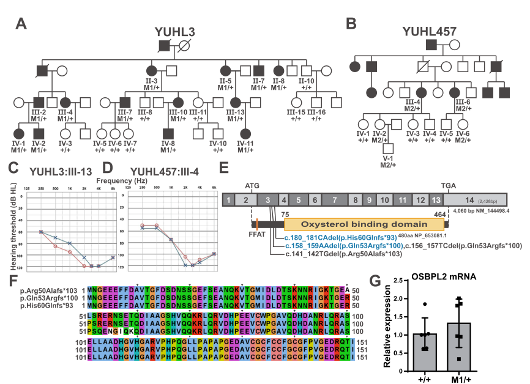

DFNA67 is postlingual, bilaterally symmetric, progressive sensorineural hearing loss caused by heterozygous OSBPL2 (ORP2) variants. Onset is between roughly ages 5 and 40, high frequencies go first, and the loss spreads across the audiogram over decades. The clinical picture is unusually reproducible across the reported families, and it is rare: a 2025 review of a large Chinese diagnostic centre found OSBPL2 in one of 607 deafness families. The genetics are as narrow as the phenotype. Almost every reported pathogenic allele is an N-terminal frameshift clustered around codons 50 to 60 - p.Gln53Argfs*100 has now been reported independently in Chinese, Mongolian and Korean families, and a 2025 review calls p.Gln53 a mutation hotspot. That is not the allelic spread a haploinsufficiency gene usually shows. What this entry is really about is that the field does not agree on what the frameshift does, and the disagreement is well evidenced on both sides rather than being one paper against a consensus. The majority position is loss of function, and it has four independent mechanistic arms, each worked out in a knockout system: excess cholesterol biosynthesis with reactive oxygen species through loss of AMPK restraint; a rise in PI(4,5)P2 on the ciliary membrane with kinociliary defects and reduced Hedgehog signalling; Rho/ROCK2 and phospho-ERM downregulation with disorganised hair bundle actin; and, late, tight junction loss in the stria vascularis with blood-labyrinth barrier leakage. The competing position is that DFNA67 is a toxic proteinopathy: the truncated protein accumulates, sequesters autophagy machinery and blocks endolysosomal turnover. The two positions collide on a single experiment. One group's Osbpl2 knockout mice have progressive hearing loss; another group's osbpl2-null mice hear normally, while transgenic mice expressing the human frameshift protein do not. Same gene, same species, opposite result, and no published attempt to reconcile strain, allele design or age at testing. Two features of the human genetics lean toward the toxic reading - the allelic spectrum is a codon-53 frameshift hotspot rather than the spread of null alleles a haploinsufficiency gene accumulates, and the one reported missense allele is hard to fit to a pure null mechanism - so this entry carries both models as named mechanistic hypotheses with the edges opting into one or the other, rather than picking a winner. The practical stake is a drug. Rapamycin was given to a handful of adults with DFNA67 on the strength of the proteinopathy model, and if that model is right the disease has a mechanism-directed therapy; if the loss-of-function model is right, clearing a toxic aggregate treats nothing. The published result is a roughly 5 dB shift at one frequency in an uncontrolled open-label handful, which is close to test-retest noise, and the paper's own patient count is internally inconsistent. That is curated here as it stands rather than as the recommendation the authors drew from it. Note also that the gene has a life outside dominant deafness that the entry deliberately keeps out of the pathograph. Biallelic OSBPL2 variants cause a distinct recessive syndrome with dyschromatosis, ichthyosis, deafness and atopic disease, and the OSBPL2-disrupted pig is hypercholesterolaemic. No lipid abnormality has been reported in human DFNA67 families, and no serum-lipid phenotype is curated here on the strength of the pig.
Ask a research question about Autosomal Dominant Nonsyndromic Hearing Loss 67. OpenScientist will conduct autonomous deep research using the Disorder Mechanisms Knowledge Base and PubMed literature (typically 10-30 minutes).
Do not include personal health information in your question. Questions and results are cached in your browser's local storage.
name: Autosomal Dominant Nonsyndromic Hearing Loss 67
category: Mendelian
creation_date: "2026-08-31T00:00:00Z"
synonyms:
- DFNA67
- deafness, autosomal dominant 67
- OSBPL2-related autosomal dominant nonsyndromic hearing loss
- ORP2-related hearing loss
- autosomal dominant nonsyndromic deafness 67
description: >-
DFNA67 is postlingual, bilaterally symmetric, progressive sensorineural hearing loss
caused by heterozygous OSBPL2 (ORP2) variants. Onset is between roughly ages 5 and 40,
high frequencies go first, and the loss spreads across the audiogram over decades. The
clinical picture is unusually reproducible across the reported families, and it is rare:
a 2025 review of a large Chinese diagnostic centre found OSBPL2 in one of 607 deafness
families.
The genetics are as narrow as the phenotype. Almost every reported pathogenic allele is
an N-terminal frameshift clustered around codons 50 to 60 - p.Gln53Argfs*100 has now been
reported independently in Chinese, Mongolian and Korean families, and a 2025 review calls
p.Gln53 a mutation hotspot. That is not the allelic spread a haploinsufficiency gene
usually shows.
What this entry is really about is that the field does not agree on what the frameshift
does, and the disagreement is well evidenced on both sides rather than being one paper
against a consensus. The majority position is loss of function, and it has four
independent mechanistic arms, each worked out in a knockout system: excess cholesterol
biosynthesis with reactive oxygen species through loss of AMPK restraint; a rise in
PI(4,5)P2 on the ciliary membrane with kinociliary defects and reduced Hedgehog
signalling; Rho/ROCK2 and phospho-ERM downregulation with disorganised hair bundle actin;
and, late, tight junction loss in the stria vascularis with blood-labyrinth barrier
leakage. The competing position is that DFNA67 is a toxic proteinopathy: the truncated
protein accumulates, sequesters autophagy machinery and blocks endolysosomal turnover.
The two positions collide on a single experiment. One group's Osbpl2 knockout mice have
progressive hearing loss; another group's osbpl2-null mice hear normally, while
transgenic mice expressing the human frameshift protein do not. Same gene, same species,
opposite result, and no published attempt to reconcile strain, allele design or age at
testing. Two features of the human genetics lean toward the toxic reading - the allelic
spectrum is a codon-53 frameshift hotspot rather than the spread of null alleles a
haploinsufficiency gene accumulates, and the one reported missense allele is hard to fit to
a pure null mechanism - so this entry carries both models as named mechanistic hypotheses
with the edges opting into one or the other, rather than picking a winner.
The practical stake is a drug. Rapamycin was given to a handful of adults with DFNA67 on
the strength of the proteinopathy model, and if that model is right the disease has a
mechanism-directed therapy; if the loss-of-function model is right, clearing a toxic
aggregate treats nothing. The published result is a roughly 5 dB shift at one frequency
in an uncontrolled open-label handful, which is close to test-retest noise, and the
paper's own patient count is internally inconsistent. That is curated here as it stands
rather than as the recommendation the authors drew from it.
Note also that the gene has a life outside dominant deafness that the entry deliberately
keeps out of the pathograph. Biallelic OSBPL2 variants cause a distinct recessive
syndrome with dyschromatosis, ichthyosis, deafness and atopic disease, and the
OSBPL2-disrupted pig is hypercholesterolaemic. No lipid abnormality has been reported in
human DFNA67 families, and no serum-lipid phenotype is curated here on the strength of
the pig.
disease_term:
preferred_term: autosomal dominant nonsyndromic hearing loss 67
term:
id: MONDO:0014594
label: autosomal dominant nonsyndromic hearing loss 67
parents:
- Autosomal Dominant Nonsyndromic Hearing Loss
external_assertions:
- name: OMIM deafness, autosomal dominant 67 record
source: OMIM
assertion_type: disease_record
external_id: OMIM:616340
description: >-
OMIM entry for DFNA67, the OSBPL2-related autosomal dominant nonsyndromic hearing loss
phenotype curated here. The gene record is OMIM 606731.
- name: ClinGen Hearing Loss GCEP gene-disease validity assertion
source: ClinGen
assertion_type: gene_disease_validity
external_id: CGGV:assertion_a493a4c4-3a9f-431a-a68e-d90d9a11b6f0-2020-02-06T172031.658Z
description: >-
ClinGen classifies OSBPL2 - nonsyndromic genetic hearing loss (autosomal dominant) as
Moderate, not Definitive, as of 2020-02-06. That is the ceiling on how strongly this
entry states the gene-disease relationship.
inheritance:
- name: Autosomal dominant
description: >-
Heterozygous OSBPL2 variants segregating with hearing loss through large multigeneration
pedigrees - seven generations and 25 affected individuals in the founding Chinese family,
six generations and 19 affected in a Mongolian family. A de novo frameshift has also been
reported, so an isolated case does not exclude the diagnosis.
Note that dominant inheritance here is a segregation observation, not a statement about
mechanism. Whether the dominance reflects haploinsufficiency or a toxic truncated protein
is the open question this entry curates as two mechanistic hypotheses.
inheritance_term:
preferred_term: Autosomal dominant inheritance
term:
id: HP:0000006
label: Autosomal dominant inheritance
evidence:
- reference: PMID:25077649
reference_title: "Identification of OSBPL2 as a novel candidate gene for progressive nonsyndromic hearing loss by whole-exome sequencing."
supports: SUPPORT
evidence_source: HUMAN_CLINICAL
snippet: "Whole-exome sequencing and subsequent segregation analysis identified a heterozygous frameshift mutation (c.153_154delCT, p.Gln53Argfs*100) in the oxysterol binding protein-like 2 (OSBPL2) gene in 25 affected family members."
explanation: The founding pedigree and the heterozygous, dominantly segregating allele.
- reference: PMID:30894143
reference_title: "A novel pathogenic variant in OSBPL2 linked to hereditary late-onset deafness in a Mongolian family."
supports: SUPPORT
evidence_source: HUMAN_CLINICAL
snippet: "The pattern of deafness inheritance in this family is autosomal dominant."
explanation: Independent replication of the inheritance mode in a second large pedigree.
- reference: PMID:41017354
reference_title: "[OSBPL2-related autosomal dominant hearing loss: a family analysis and literature review]."
supports: SUPPORT
evidence_source: HUMAN_CLINICAL
snippet: "there was only one (0.16%) novel de novo frameshift variation (affecting amino acid 53, p.Gln53)"
explanation: >-
A de novo occurrence, which matters clinically because it means a negative family
history does not rule DFNA67 out.
mechanistic_hypotheses:
- hypothesis_group_id: osbpl2_loss_of_function
hypothesis_label: Loss of OSBPL2 lipid-transfer function in cochlear cells
status: CANONICAL
description: >-
The majority model. OSBPL2/ORP2 is a sterol and phosphoinositide transfer protein, and
the frameshift is read as abolishing that function, so the cochlear phenotype follows
from what happens to a hair cell without it. Four mechanistic arms have been developed
independently, all of them in systems where the gene has been deleted rather than
mutated: cholesterol biosynthesis and reactive oxygen species rise when AMPK restraint
is lost; PI(4,5)P2 accumulates on the ciliary membrane and Hedgehog signalling falls;
Rho/ROCK2 and phospho-ERM fall and hair bundle actin is disorganised; and tight
junctions in the stria vascularis fail with blood-labyrinth barrier leakage.
The consistent weakness across all four is the same: every one of them models the
disease as absence of the protein, whereas patients carry one wild-type and one
frameshift allele.
evidence:
- reference: PMID:35253614
reference_title: "OSBPL2 mutations impair autophagy and lead to hearing loss, potentially remedied by rapamycin."
supports: SUPPORT
evidence_source: OTHER
snippet: "Therefore, these studies link dysregulated lipid metabolism resulting from the loss of OSBPL2, to hearing impairment."
explanation: >-
A statement of the loss-of-function model by authors who go on to argue against it,
which is why it is a fair summary of the majority position rather than an advocate's.
Graded OTHER because the sentence is the paper's review of prior work, not a result it
reports.
- hypothesis_group_id: osbpl2_toxic_proteinopathy
hypothesis_label: Toxic accumulation of the truncated OSBPL2 protein
status: ALTERNATIVE
description: >-
The competing model. The N-terminal frameshift produces a stable truncated protein that
accumulates intracellularly, binds autophagy machinery and blocks endolysosomal
turnover, so the disease is a gain of toxic function rather than a loss of transfer
activity. The decisive experiment is a negative one: the same group's osbpl2-null mice
hear normally at four months while transgenic mice expressing the human frameshift
protein are deaf by P60.
Two observations from human genetics point the same way. Pathogenic alleles are almost
all N-terminal frameshifts clustered at a hotspot rather than the spread of nonsense,
splice and whole-gene deletion alleles a haploinsufficiency gene accumulates; and the one
reported missense allele, p.Leu195Met, is hard to fit to a pure null mechanism. Neither
observation is decisive on its own, which is why this is ALTERNATIVE and not CANONICAL.
evidence:
- reference: PMID:35253614
reference_title: "OSBPL2 mutations impair autophagy and lead to hearing loss, potentially remedied by rapamycin."
supports: SUPPORT
evidence_source: MODEL_ORGANISM
snippet: "Transgenic mice expressing mutant OSBPL2 exhibited hearing loss, but osbpl2 knockout mice or transgenic mice expressing wild-type OSBPL2 did not."
explanation: >-
The core genetic argument for the toxic model, with both controls that make it an
argument rather than an observation - the null and the wild-type transgene.
- reference: PMID:35253614
reference_title: "OSBPL2 mutations impair autophagy and lead to hearing loss, potentially remedied by rapamycin."
supports: SUPPORT
evidence_source: OTHER
snippet: "This implies that OSBPL2 mutations may exert a dominant-negative effect rather than haploinsufficiency, but this has not been proven."
explanation: >-
The authors' own statement of how far the argument reaches, including that it is not
proven. Graded OTHER because it is the paper's reasoning about the prior literature
rather than a result.
notes: >-
ClinGen's Dosage Sensitivity curation for OSBPL2 was cited in issue discussion as
scoring haploinsufficiency 1 ("Little Evidence"), which would be a third independent
argument for this hypothesis. It is not cited here: `just clingen-dosage-refresh` aborts
on a drifted upstream checksum after downloading only the first of its two bulk files,
so `clingen-dosage-rebuild` cannot produce the CGDS cache record and there is nothing to
quote. The claim is left out rather than asserted from memory.
pathophysiology:
- name: OSBPL2 N-terminal Frameshift Variant
description: >-
The shared trigger. Every reported DFNA67 allele but one is a heterozygous frameshift in
the first sixty codons: c.153_154delCT (p.Gln53Argfs*100) in the founding Chinese family,
c.141_142delTG (p.Arg50Alafs*103) in the German family that named the locus, and
c.158_159delAA (p.Gln53Argfs*100) in both a Mongolian family and the Korean YUHL3 family,
whose sister family YUHL457 carries c.180_181delCA (p.His60Glnfs*93). A c.583C>A
(p.Leu195Met) missense allele was reported in one sporadic case and is the exception.
Two nomenclature warnings for anyone reusing these. p.Gln53Argfs*100 is reported with two
different cDNA descriptions, c.153_154delCT and c.158_159delAA, because the publications
number against different transcripts; they should be normalised to a stated MANE transcript
before reuse. And the Korean paper writes its two alleles as c.158_159AAdel and
c.180_181CAdel; the HGVS-ordered forms are used above and denote the same variants.
The clustering is itself a mechanistic datum. A gene that caused disease by
haploinsufficiency would be expected to accumulate nonsense, splice-site and whole-gene
deletion alleles across its length; this one has a codon-53 hotspot instead. Which of
the two downstream models the frameshift feeds is the disagreement this entry curates.
biological_scale: MOLECULAR
genes:
- preferred_term: OSBPL2
term:
id: hgnc:15761
label: OSBPL2
downstream:
- target: Loss of OSBPL2 Sterol and Phosphoinositide Transfer
causal_link_type: DIRECT
hypothesis_groups:
- osbpl2_loss_of_function
- target: Accumulation of Truncated OSBPL2 and Autophagy Blockade
causal_link_type: DIRECT
hypothesis_groups:
- osbpl2_toxic_proteinopathy
evidence:
- reference: PMID:25077649
reference_title: "Identification of OSBPL2 as a novel candidate gene for progressive nonsyndromic hearing loss by whole-exome sequencing."
supports: SUPPORT
evidence_source: HUMAN_CLINICAL
snippet: "Whole-exome sequencing and subsequent segregation analysis identified a heterozygous frameshift mutation (c.153_154delCT, p.Gln53Argfs*100) in the oxysterol binding protein-like 2 (OSBPL2) gene in 25 affected family members."
explanation: The founding allele.
- reference: PMID:25759012
reference_title: "OSBPL2 encodes a protein of inner and outer hair cell stereocilia and is mutated in autosomal dominant hearing loss (DFNA67)."
supports: SUPPORT
evidence_source: HUMAN_CLINICAL
snippet: "we mapped a novel ADNSHL locus, DFNA67, to chromosome 20q13.2-q13.33, and subsequently identified a co-segregating heterozygous frameshift mutation, c.141_142delTG (p.Arg50Alafs*103), in OSBPL2"
explanation: >-
The independent German family that named the DFNA67 locus, with a second N-terminal
frameshift a few codons away from the first.
- reference: PMID:30894143
reference_title: "A novel pathogenic variant in OSBPL2 linked to hereditary late-onset deafness in a Mongolian family."
supports: SUPPORT
evidence_source: HUMAN_CLINICAL
snippet: "Whole genome sequencing identified a novel pathogenic frameshift mutation, c.158_159delAA (p.Gln53Arg fs*100) in the gene OSBPL2"
explanation: A third family with the same predicted protein change from a different deletion.
- reference: PMID:41017354
reference_title: "[OSBPL2-related autosomal dominant hearing loss: a family analysis and literature review]."
supports: SUPPORT
evidence_source: HUMAN_CLINICAL
snippet: "predominantly frameshift variations, and can occur de novo, with p.Gln53 as a mutation hotspot"
explanation: >-
The reviewed allelic spectrum, and the hotspot claim on which the toxic-protein
argument partly rests.
- name: Loss of OSBPL2 Sterol and Phosphoinositide Transfer
description: >-
The molecular lesion under the loss-of-function model. ORP2 is the only mammalian
OSBP-related protein that exists solely as a short variant without a pleckstrin homology
domain; its ORD binds cholesterol, oxysterols and phosphoinositides, and it is proposed
to move cholesterol to the plasma membrane in exchange for PI(4,5)P2. Losing that
exchange predicts both of the downstream lipid abnormalities recorded here - a
cholesterol-handling defect and a PI(4,5)P2 excess - which is why the two arms are drawn
from one node rather than as unrelated findings.
In the cochlea the protein is where the phenotype is: it is expressed in the stereocilia
of inner and outer hair cells, at the base of hair cell kinocilia and supporting cell
primary cilia, and highly in the stria vascularis.
biological_scale: MOLECULAR
genes:
- preferred_term: OSBPL2
term:
id: hgnc:15761
label: OSBPL2
molecular_functions:
- preferred_term: cholesterol transfer activity
term:
id: GO:0120020
label: cholesterol transfer activity
- preferred_term: phosphatidylinositol-4,5-bisphosphate binding
term:
id: GO:0005546
label: phosphatidylinositol-4,5-bisphosphate binding
cell_types:
- preferred_term: cochlear outer hair cell
term:
id: CL:0000601
label: cochlear outer hair cell
- preferred_term: cochlear inner hair cell
term:
id: CL:0000589
label: cochlear inner hair cell
biological_processes:
- preferred_term: intracellular cholesterol transport
term:
id: GO:0032367
label: intracellular cholesterol transport
modifier: DECREASED
downstream:
- target: Excess Cholesterol Biosynthesis and Oxidative Stress in Auditory Cells
causal_link_type: DIRECT
hypothesis_groups:
- osbpl2_loss_of_function
- target: Ciliary PI(4,5)P2 Excess and Reduced Hedgehog Signalling
causal_link_type: DIRECT
hypothesis_groups:
- osbpl2_loss_of_function
- target: Rho/ROCK2-ERM Actin Disorganisation in the Hair Bundle
causal_link_type: INDIRECT_UNKNOWN_INTERMEDIATES
hypothesis_groups:
- osbpl2_loss_of_function
- target: Stria Vascularis Tight Junction Loss and Blood-Labyrinth Barrier Leakage
causal_link_type: INDIRECT_UNKNOWN_INTERMEDIATES
hypothesis_groups:
- osbpl2_loss_of_function
evidence:
- reference: PMID:30716465
reference_title: "OSBP-related protein 2 (ORP2): Unraveling its functions in cellular lipid/carbohydrate metabolism, signaling and F-actin regulation."
supports: SUPPORT
evidence_source: OTHER
snippet: "the latest observations suggest a function of ORP2 in cholesterol transport to the plasma membrane (PM) in exchange for phosphatidylinositol 4,5-bisphosphate (PI4,5P2), with significant impacts on the concentrations of PM cholesterol and PI4,5P2"
explanation: >-
The transfer activity that makes one molecular lesion account for both the cholesterol
arm and the PI(4,5)P2 arm below. Graded OTHER because this is a review summarising
other groups' biochemistry, not a result of its own.
- reference: PMID:25759012
reference_title: "OSBPL2 encodes a protein of inner and outer hair cell stereocilia and is mutated in autosomal dominant hearing loss (DFNA67)."
supports: SUPPORT
evidence_source: MODEL_ORGANISM
snippet: "Osbpl2 was prominently expressed in stereocilia of cochlear outer and inner hair cells."
explanation: >-
Places the protein at the hair bundle, which is what makes a hair cell lesion the
expected consequence of losing it. Mouse immunohistochemistry.
- reference: PMID:35041619
reference_title: "Mutations in OSBPL2 cause hearing loss associated with primary cilia defects via sonic hedgehog signaling."
supports: SUPPORT
evidence_source: MODEL_ORGANISM
snippet: "OSBPL2 was located at the base of the kinocilia in hair cells (HCs) and primary cilia in supporting cells (SCs)"
explanation: A second cochlear localisation, at the ciliary base rather than in the bundle.
- reference: PMID:25759012
reference_title: "OSBPL2 encodes a protein of inner and outer hair cell stereocilia and is mutated in autosomal dominant hearing loss (DFNA67)."
supports: NO_EVIDENCE
evidence_source: OTHER
snippet: "The function of OSBPL2 in the hearing process remains to be determined."
explanation: >-
Graded NO_EVIDENCE rather than REFUTE. The paper that named the locus is stating that no
experiment had yet established what the protein does in hearing, which is absence of
evidence for this node rather than evidence against it; everything below was published
afterwards. evidence_source is OTHER because the quoted sentence reports a state of
knowledge rather than any study result, following the same convention used for the other
state-of-knowledge quotes in this file.
- name: Excess Cholesterol Biosynthesis and Oxidative Stress in Auditory Cells
description: >-
The first loss-of-function arm. Deleting Osbpl2 in OC1 auditory cells and osbpl2b in
zebrafish reduces AMPK activity and derepresses Srebp2, Hmgcr and Hmgcs1, so total
cholesterol rises; reactive oxygen species rise with it and mitochondria are damaged.
OSBPL2 was found to interact with ATIC, an AMPK activator, which is the proposed link
between the transfer protein and the kinase.
This is a cell-intrinsic lipid dysregulation, not the hair-bundle cholesterol
distribution defect described for other deafness genes. Nobody has measured cholesterol
in a mammalian hair bundle in an OSBPL2 model, so this entry claims a change in
biosynthesis and total cellular content, and does not claim a change in where cholesterol
sits within the bundle.
biological_scale: CELLULAR
biological_processes:
- preferred_term: cholesterol biosynthetic process
term:
id: GO:0006695
label: cholesterol biosynthetic process
modifier: INCREASED
downstream:
- target: Cochlear Hair Cell Degeneration
causal_link_type: INDIRECT_UNKNOWN_INTERMEDIATES
hypothesis_groups:
- osbpl2_loss_of_function
evidence:
- reference: PMID:31427568
reference_title: "Deletion of OSBPL2 in auditory cells increases cholesterol biosynthesis and drives reactive oxygen species production by inhibiting AMPK activity."
supports: SUPPORT
evidence_source: IN_VITRO
snippet: "Osbpl2/osbpl2b-KO resulted in a reduction of AMPK activity and up-regulation of Srebp2/srebp2, Hmgcr/hmgcr and Hmgcs1/hmgcs1, key genes in the sterol biosynthetic pathway and associated with AMPK signaling."
explanation: >-
The AMPK-to-sterol-synthesis step. Graded IN_VITRO because the measurement quoted is
from knockout OC1 auditory cells; the parallel zebrafish result is cited separately
under the animal model.
- reference: PMID:31427568
reference_title: "Deletion of OSBPL2 in auditory cells increases cholesterol biosynthesis and drives reactive oxygen species production by inhibiting AMPK activity."
supports: SUPPORT
evidence_source: IN_VITRO
snippet: "The levels of total cholesterol and ROS in OC1 cells or zebrafish inner ear were both increased in Osbpl2/osbpl2b-KO mutants and the mitochondrial damage was detected in Osbpl2-KO OC1 cells."
explanation: >-
The measured endpoint - raised total cholesterol, raised ROS, mitochondrial damage -
that makes this an oxidative-stress node and not only a lipid one.
- reference: PMID:42191057
reference_title: "OSBPL2 deficiency impaired autophagy and induced apoptosis in auditory cells via AMPK-TFEB signalling pathway."
supports: SUPPORT
evidence_source: IN_VITRO
snippet: "OSBPL2 deficiency impaired autophagy by inhibiting AMPK-TFEB signalling, resulting in aberrant accumulation of lipid droplets and apoptosis in auditory cells, which could be partially reversed by trehalose treatment."
explanation: >-
Extends the same AMPK arm downstream to lipid droplet accumulation and apoptosis, and
supplies the preclinical trehalose rescue. Note this reaches an autophagy defect from
the loss-of-function side, which is where the two hypotheses come closest to touching.
- name: Ciliary PI(4,5)P2 Excess and Reduced Hedgehog Signalling
description: >-
The second loss-of-function arm, and the most direct read-out of the transfer activity.
In Osbpl2-knockout mice the cochlea is shortened, hair cells are misaligned and kinocilia
are morphologically abnormal; PI(4,5)P2 rises on the ciliary membrane and can be brought
back down by overexpressing the phosphoinositide phosphatase INPP5E. Downstream,
Smoothened and GLI3 fall in knockout HEI-OC1 cells, placing a Hedgehog signalling deficit
under the ciliary lesion.
The INPP5E rescue is what makes this more than a correlation: putting the lipid back
where it belongs partially reverses the phenotype.
biological_scale: CELLULAR
cell_types:
- preferred_term: cochlear outer hair cell
term:
id: CL:0000601
label: cochlear outer hair cell
biological_processes:
- preferred_term: cilium assembly
term:
id: GO:0060271
label: cilium assembly
modifier: DECREASED
- preferred_term: smoothened signaling pathway
term:
id: GO:0007224
label: smoothened signaling pathway
modifier: DECREASED
downstream:
- target: Cochlear Hair Cell Degeneration
causal_link_type: INDIRECT_UNKNOWN_INTERMEDIATES
hypothesis_groups:
- osbpl2_loss_of_function
evidence:
- reference: PMID:35041619
reference_title: "Mutations in OSBPL2 cause hearing loss associated with primary cilia defects via sonic hedgehog signaling."
supports: SUPPORT
evidence_source: MODEL_ORGANISM
snippet: "OSBPL2 deficiency led to a significant increase of PI(4,5)P2 on the cilia membrane, which could be partially rescued by the overexpression of INPP5E."
explanation: >-
The lipid measurement and its reversal, which is the causal test rather than a
correlation.
- reference: PMID:35041619
reference_title: "Mutations in OSBPL2 cause hearing loss associated with primary cilia defects via sonic hedgehog signaling."
supports: SUPPORT
evidence_source: IN_VITRO
snippet: "smoothened and GL13, the key molecules in the Sonic Hedgehog (Shh) signaling pathway, were detected to be downregulated in Osbpl2-KO HEI-OC1 cells"
explanation: >-
The Hedgehog deficit. Graded IN_VITRO because the measurement is in a knockout auditory
cell line. The quote reproduces the cached text exactly, including the paper's
typesetting of GLI3 as "GL13".
- name: Rho/ROCK2-ERM Actin Disorganisation in the Hair Bundle
description: >-
The third loss-of-function arm, and the one that connects the molecular lesion to the
structure the hair cell needs most. OSBPL2 deficiency inhibits Rho/ROCK2 signalling and
lowers phosphorylated ezrin-radixin-moesin, the linkers that tie the plasma membrane to
cortical actin; F-actin morphology in HEI-OC1 cells becomes abnormal and mouse hair cells
show stereociliary defects. ORP2 was already known to bind F-actin regulators including
DIAPH1 - itself the DFNA1 deafness gene - which is a suggestive but separate line.
The edge from the transfer node is drawn as indirect with unknown intermediates: how a
sterol and phosphoinositide transfer protein sets Rho/ROCK2 tone has not been worked out,
though PI(4,5)P2 is a plausible bridge given that both ERM activation and Rho signalling
depend on it.
biological_scale: CELLULAR
cell_types:
- preferred_term: cochlear outer hair cell
term:
id: CL:0000601
label: cochlear outer hair cell
biological_processes:
- preferred_term: actin cytoskeleton organization
term:
id: GO:0030036
label: actin cytoskeleton organization
modifier: DECREASED
downstream:
- target: Cochlear Hair Cell Degeneration
causal_link_type: DIRECT
hypothesis_groups:
- osbpl2_loss_of_function
evidence:
- reference: PMID:40391522
reference_title: "OSBPL2 deficiency inhibits Rho/ROCK2/p-ERM signaling and impairs actin cytoskeletal regulation in auditory cells."
supports: SUPPORT
evidence_source: IN_VITRO
snippet: "we found that OSBPL2 deficiency inhibited the Rho/ROCK2 signaling pathway and downregulated phosphorylated Ezrin-Radixin-Moesin (p-ERM), resulting in abnormal F-actin morphology in HEI-OC1 cells and stereociliary defects in mouse HCs"
explanation: >-
The signalling step and both structural read-outs. Graded IN_VITRO because the
signalling measurements quoted are in the HEI-OC1 auditory cell line; the mouse
stereocilia observation in the same sentence is corroborative rather than the primary
claim here.
- reference: PMID:30716465
reference_title: "OSBP-related protein 2 (ORP2): Unraveling its functions in cellular lipid/carbohydrate metabolism, signaling and F-actin regulation."
supports: SUPPORT
evidence_source: OTHER
directness: INDIRECT
snippet: "ORP2 was shown to interact physically with F-actin regulators such as DIAPH1, ARHGAP12, SEPT9 and MLC12"
explanation: >-
An independent route from ORP2 to actin regulation, and specifically to DIAPH1, the
DFNA1 gene. Directness is INDIRECT because the interactions were characterised in
non-cochlear cells and none of them was tested for a role in this node.
- name: Stria Vascularis Tight Junction Loss and Blood-Labyrinth Barrier Leakage
description: >-
The fourth loss-of-function arm, and the only one that is not a hair cell lesion. OSBPL2
is highly expressed in the stria vascularis, where the blood-labyrinth barrier sits.
Ten-month-old Osbpl2-knockout mice leak FITC-dextran into the stria, OSBPL2-deficient
human endothelial cells are correspondingly more permeable, tight junctions are disrupted
and NF-kappaB-driven inflammatory apoptosis follows.
Age is the important qualifier. This was measured at ten months, long after the knockout
thresholds are already abnormal, so it reads as a late contributor to a progressive course
rather than as the initiating lesion. It is curated as a separate node because a barrier
failure is a different kind of injury from a hair bundle defect and would call for
different treatment.
biological_scale: TISSUE
locations:
- preferred_term: stria vascularis
term:
id: UBERON:0002282
label: stria vascularis of cochlear duct
biological_processes:
- preferred_term: bicellular tight junction assembly
term:
id: GO:0070830
label: bicellular tight junction assembly
modifier: DECREASED
downstream:
- target: Cochlear Hair Cell Degeneration
causal_link_type: INDIRECT_UNKNOWN_INTERMEDIATES
hypothesis_groups:
- osbpl2_loss_of_function
evidence:
- reference: PMID:40975921
reference_title: "OSBPL2 deficiency impaired cochlear blood-labyrinth barrier via activation of NF-κB signaling pathway."
supports: SUPPORT
evidence_source: MODEL_ORGANISM
snippet: "significant SV leakage was detected in cochleae of 10-month-old Osbpl2-KO mice, which was consistent with the increased endothelial permeability in OSBPL2-deficient HUVECs"
explanation: >-
The barrier measurement and its age, which is what makes this a late node rather than an
initiating one.
- reference: PMID:40975921
reference_title: "OSBPL2 deficiency impaired cochlear blood-labyrinth barrier via activation of NF-κB signaling pathway."
supports: SUPPORT
evidence_source: MODEL_ORGANISM
snippet: "OSBPL2 deficiency led to TJs disruption and induced inflammation-mediated apoptosis via the activation of NF-κB signaling"
explanation: The junctional and inflammatory steps between barrier failure and cell death.
- name: Accumulation of Truncated OSBPL2 and Autophagy Blockade
description: >-
The alternative model in one node. The frameshift protein accumulates inside the cell,
binds autophagy proteins and leaves endolysosomal homeostasis defective, so autophagic
turnover fails. On this reading DFNA67 belongs with the proteinopathies rather than with
the lipid-transport deafnesses, and the therapeutic target is clearance of the mutant
protein rather than replacement of a lost function.
The claim rests on a transgene. The truncated protein was expressed from a construct, not
from the patient allele in its own locus, so whether the endogenous frameshift transcript
escapes nonsense-mediated decay in human cochlea is unmeasured - the gap recorded in the
discussion below.
biological_scale: CELLULAR
biological_processes:
- preferred_term: autophagy
term:
id: GO:0006914
label: autophagy
modifier: DECREASED
downstream:
- target: Cochlear Hair Cell Degeneration
causal_link_type: INDIRECT_UNKNOWN_INTERMEDIATES
hypothesis_groups:
- osbpl2_toxic_proteinopathy
evidence:
- reference: PMID:35253614
reference_title: "OSBPL2 mutations impair autophagy and lead to hearing loss, potentially remedied by rapamycin."
supports: SUPPORT
evidence_source: IN_VITRO
snippet: "Mutant OSBPL2 accumulated intracellularly and bound to macroautophagy/autophagy proteins. Consequently, its accumulation led to defective endolysosomal homeostasis and impaired autophagy."
explanation: >-
The molecular content of the node. Graded IN_VITRO because the accumulation, binding and
endolysosomal readouts are cell-based; the mouse hearing result is cited separately on
the animal model.
- reference: PMID:35253614
reference_title: "OSBPL2 mutations impair autophagy and lead to hearing loss, potentially remedied by rapamycin."
supports: SUPPORT
evidence_source: MODEL_ORGANISM
snippet: "Rapamycin decreased the accumulation of mutant OSBPL2 and partially rescued hearing loss in mice."
explanation: >-
A pharmacological test of the node in the direction that matters: clearing the protein
improves hearing, which is what makes the accumulation causal rather than incidental in
this model.
- name: Cochlear Hair Cell Degeneration
description: >-
Where both models converge, and the reason the two can coexist in one entry without the
pathograph fragmenting. Hair cells are lost with abnormal stereocilia in the
OSBPL2-disrupted pig and in the frameshift transgenic mouse, and hair cell apoptosis is
the endpoint reported in every knockout auditory cell system. Nothing in the human
literature reaches this node directly - cochlear histology is not available in living
patients - so it is inferred from animal and cell models and from the audiometric pattern.
biological_scale: TISSUE
cell_types:
- preferred_term: cochlear outer hair cell
term:
id: CL:0000601
label: cochlear outer hair cell
- preferred_term: cochlear inner hair cell
term:
id: CL:0000589
label: cochlear inner hair cell
locations:
- preferred_term: organ of Corti
term:
id: UBERON:0002227
label: spiral organ of cochlea
downstream:
- target: Progressive Elevation of Auditory Thresholds
causal_link_type: DIRECT
evidence:
- reference: PMID:31451425
reference_title: "OSBPL2-disrupted pigs recapitulate dual features of human hearing loss and hypercholesterolaemia."
supports: SUPPORT
evidence_source: MODEL_ORGANISM
snippet: "The OSBPL2-disrupted pigs displayed progressive hearing loss (HL) with degeneration/apoptosis of cochlea hair cells (HCs) and morphological abnormalities in HC stereocilia, as well as hypercholesterolaemia."
explanation: >-
The clearest structural statement of this node, in the large-animal model whose cochlea
is closest to the human one.
- name: Progressive Elevation of Auditory Thresholds
description: >-
The organism-level endpoint: pure-tone thresholds that start high-frequency and rise
across the audiogram over decades, from a postlingual onset somewhere between ages 5 and
40 to moderate-to-severe or profound loss in later adulthood. The slow trajectory is
itself clinically important, because it means the diagnosis is usually made in someone who
still has usable hearing and a long horizon over which any intervention could act.
biological_scale: ORGANISM
evidence:
- reference: PMID:35253614
reference_title: "OSBPL2 mutations impair autophagy and lead to hearing loss, potentially remedied by rapamycin."
supports: SUPPORT
evidence_source: HUMAN_CLINICAL
snippet: "Individuals with OSBPL2 mutations develop postlingual hearing loss between ages 5 and 40, as well as bilaterally symmetric, moderate-to-severe hearing loss."
explanation: Onset window, symmetry and severity across the reported families.
- reference: PMID:25759012
reference_title: "OSBPL2 encodes a protein of inner and outer hair cell stereocilia and is mutated in autosomal dominant hearing loss (DFNA67)."
supports: SUPPORT
evidence_source: HUMAN_CLINICAL
snippet: "Onset of hearing loss in the investigated ADNSHL family is in childhood, initially affecting the high frequencies and progressing to profound deafness in adulthood."
explanation: The audiometric trajectory in the German family, from high frequencies outward.
phenotypes:
- name: Postlingual Progressive Sensorineural Hearing Impairment
category: Auditory
description: >-
The defining phenotype and, in the reported literature, the only one. Onset is postlingual
- reported between ages 5 and 40, and between 10 and 40 in the Mongolian pedigree - and
the loss is bilateral, symmetric and progressive, reaching moderate to severe or profound
in adulthood. Because onset is postlingual, newborn hearing screening does not detect it.
frequency: OBLIGATE
phenotype_term:
preferred_term: Postlingual sensorineural hearing impairment
term:
id: HP:0008596
label: Postlingual sensorineural hearing impairment
clinical_course: PROGRESSIVE
evidence:
- reference: PMID:35253614
reference_title: "OSBPL2 mutations impair autophagy and lead to hearing loss, potentially remedied by rapamycin."
supports: SUPPORT
evidence_source: HUMAN_CLINICAL
snippet: "Individuals with OSBPL2 mutations develop postlingual hearing loss between ages 5 and 40, as well as bilaterally symmetric, moderate-to-severe hearing loss."
explanation: Onset window, symmetry and severity.
- reference: PMID:30894143
reference_title: "A novel pathogenic variant in OSBPL2 linked to hereditary late-onset deafness in a Mongolian family."
supports: SUPPORT
evidence_source: HUMAN_CLINICAL
snippet: "19 of them were diagnosed with post lingual deafness with the age of onset between 10 and 40 years, displaying delayed and progressive hearing loss."
explanation: >-
Independent confirmation of the postlingual, progressive course in a nineteen-affected
pedigree.
- name: High-Frequency-First Audiometric Configuration
category: Auditory
description: >-
Hearing loss begins in the high frequencies in late childhood or adolescence and only
later involves the mid and low frequencies. This is the feature that makes DFNA67
suspectable on an audiogram before sequencing, and it is what a 2025 review points to
when it recommends OSBPL2 testing for progressive high-frequency-onset loss with a uniform
phenotype.
frequency: VERY_FREQUENT
phenotype_term:
preferred_term: High-frequency sensorineural hearing impairment
term:
id: HP:0001757
label: High-frequency sensorineural hearing impairment
evidence:
- reference: PMID:35253614
reference_title: "OSBPL2 mutations impair autophagy and lead to hearing loss, potentially remedied by rapamycin."
supports: SUPPORT
evidence_source: HUMAN_CLINICAL
snippet: "Hearing loss starts at high frequencies at an early age and progresses to other frequencies at a later age in most cases."
explanation: >-
The configuration and its progression, with the authors' own "in most cases" hedge -
which is why this is VERY_FREQUENT rather than OBLIGATE.
- reference: PMID:41017354
reference_title: "[OSBPL2-related autosomal dominant hearing loss: a family analysis and literature review]."
supports: SUPPORT
evidence_source: HUMAN_CLINICAL
snippet: "presenting with bilateral, symmetric, late-onset, progressive sensorineural hearing loss starting with high frequencies during late adolescence and gradually involving all frequencies"
explanation: The same configuration in the most recently reported case.
notes: >-
A caveat on the founding German family, which is the one place the configuration is not
uniform: the authors report considerable intrafamilial variability alongside the
high-frequency onset. The band is set from the qualified statements in the sources rather
than from a counted denominator, because no published series tabulates audiogram shape per
affected individual.
- name: Bilateral Sensorineural Hearing Impairment
category: Auditory
description: >-
Both ears are affected and the audiograms are symmetric. Every reported family describes
the loss this way, and the symmetry is part of what makes the phenotype recognisable enough
for the 2025 review to recommend testing on the audiogram pattern.
frequency: OBLIGATE
phenotype_term:
preferred_term: Bilateral sensorineural hearing impairment
term:
id: HP:0008619
label: Bilateral sensorineural hearing impairment
evidence:
- reference: PMID:30894143
reference_title: "A novel pathogenic variant in OSBPL2 linked to hereditary late-onset deafness in a Mongolian family."
supports: SUPPORT
evidence_source: HUMAN_CLINICAL
snippet: "Patients with hearing loss showed bilateral symmetry and mild to severe sensorineural deafness."
explanation: Bilaterality and symmetry across the nineteen affected members of one pedigree.
- reference: PMID:41017354
reference_title: "[OSBPL2-related autosomal dominant hearing loss: a family analysis and literature review]."
supports: SUPPORT
evidence_source: HUMAN_CLINICAL
snippet: "presenting with bilateral, symmetric, late-onset, progressive sensorineural hearing loss starting with high frequencies during late adolescence and gradually involving all frequencies"
explanation: The same description in the most recently reported case.
- name: Severe Sensorineural Hearing Impairment in Adulthood
category: Auditory
description: >-
The endpoint of the progressive course. Severity reaches severe or profound in adulthood in
a substantial share of affected individuals, and it is what brings them to cochlear-implant
candidacy - six implanted across two Korean families, and implantation between the ages of
27 and 50 in the German pedigree. This is a distinct claim from the onset phenotype above,
which is what someone asking whether DFNA67 ends in usable hearing needs answered.
frequency: FREQUENT
phenotype_term:
preferred_term: Severe sensorineural hearing impairment
term:
id: HP:0008625
label: Severe sensorineural hearing impairment
onset:
onset_category: ADULT
evidence:
- reference: PMID:35253614
reference_title: "OSBPL2 mutations impair autophagy and lead to hearing loss, potentially remedied by rapamycin."
supports: SUPPORT
evidence_source: HUMAN_CLINICAL
snippet: "The severity of hearing loss reached severe-profound hearing loss, whereby patients eventually needed cochlear implantation."
explanation: >-
The severity endpoint and the clinical consequence that follows from it. Curated at the
severe rather than the profound term because the source states a severe-to-profound range
and does not separate the two.
- reference: PMID:25759012
reference_title: "OSBPL2 encodes a protein of inner and outer hair cell stereocilia and is mutated in autosomal dominant hearing loss (DFNA67)."
supports: SUPPORT
evidence_source: HUMAN_CLINICAL
snippet: "Onset of hearing loss in the investigated ADNSHL family is in childhood, initially affecting the high frequencies and progressing to profound deafness in adulthood."
explanation: Independent statement of the adult severity endpoint in the German pedigree.
notes: >-
FREQUENT rather than a higher band because no series reports a denominator: implantation
counts are known for two Korean and one German family, but the reported literature does not
say how many of all affected individuals reach severe-to-profound loss, and the German
report explicitly notes considerable intrafamilial variability. The band is a floor set by
the counted implantations, not a measured proportion.
- name: Tinnitus
category: Auditory
description: >-
Tinnitus was present in two of the five DFNA67 adults enrolled in the rapamycin series and
improved on the Tinnitus Handicap Inventory during treatment. It is not reported in the
original family descriptions.
frequency: FREQUENT
phenotype_term:
preferred_term: Tinnitus
term:
id: HP:0000360
label: Tinnitus
evidence:
- reference: PMID:35253614
reference_title: "OSBPL2 mutations impair autophagy and lead to hearing loss, potentially remedied by rapamycin."
supports: SUPPORT
evidence_source: HUMAN_CLINICAL
snippet: "Tinnitus was identified in two patients; the symptom improved according to the Tinnitus Handicap Inventory (THI) questionnaire"
explanation: The only report of tinnitus frequency in DFNA67, with its treatment response.
notes: >-
The band comes from two of five, which falls in FREQUENT, but the denominator is five
adults selected for a drug study rather than a phenotyped cohort, and none of the large
pedigree reports mentions tinnitus at all. Treat the band as provisional.
prevalence:
- population: Worldwide, published families
measure_type: CASES_IN_LITERATURE
prevalence_class: ULTRA_RARE
notes: >-
Roughly seven published families plus a sporadic case as of 2025. No population prevalence
estimate exists, so no numeric band is asserted. The only quantitative figure available is
a diagnostic yield, which is not a prevalence: one OSBPL2 family among 607 deafness families
at a Chinese referral centre, and two among 202 exome-sequenced families in a Korean cohort
after GJB2 and SLC26A4 were excluded. The two figures differ by roughly sixfold and are not
comparable - the Korean denominator is a pre-screened, exome-sequenced subset - so neither
is converted into a rate here.
evidence:
- reference: PMID:41017354
reference_title: "[OSBPL2-related autosomal dominant hearing loss: a family analysis and literature review]."
supports: SUPPORT
evidence_source: HUMAN_CLINICAL
snippet: "Among 607 families with deafness, there was only one (0.16%) novel de novo frameshift variation (affecting amino acid 53, p.Gln53)"
explanation: >-
The diagnostic yield at a large hereditary hearing loss centre, which is the closest the
literature comes to a frequency figure.
- reference: PMID:41017354
reference_title: "[OSBPL2-related autosomal dominant hearing loss: a family analysis and literature review]."
supports: SUPPORT
evidence_source: HUMAN_CLINICAL
snippet: "The current findings reveal that OSBPL2 variants-caused autosomal dominant nonsyndromic hearing loss 67 (DFNA67) is rare"
explanation: The reviewers' own summary of how rare the condition is.
- reference: PMID:35253614
reference_title: "OSBPL2 mutations impair autophagy and lead to hearing loss, potentially remedied by rapamycin."
supports: SUPPORT
evidence_source: HUMAN_CLINICAL
snippet: "Among the 202 families, we detected potentially causative OSBPL2 mutations in two families, indicating that 1.0% (2/202) of the hearing loss cases were caused by OSBPL2."
explanation: >-
The second, higher yield figure, from a Korean cohort pre-screened for GJB2 and SLC26A4 -
a different denominator from the Chinese centre's, which is why the two are recorded
rather than averaged.
genetic:
- name: OSBPL2
notes: >-
OSBPL2 at 20q13.33 encodes oxysterol-binding protein-like 2 (ORP2), the only mammalian ORP
that exists solely as a short variant without a pleckstrin homology domain. ClinGen's
Hearing Loss Gene Curation Expert Panel classifies the OSBPL2 - nonsyndromic genetic
hearing loss relationship as Moderate, not Definitive, and that ceiling applies to the
whole entry.
Biallelic OSBPL2 variants cause a separate recessive condition - dyschromatosis,
ichthyosis, deafness and atopic disease - through PLCB3 destabilisation. That is a
different disease and is not curated here; it is noted so a reader who searches the gene
rather than the disease does not import its features.
relationship_type: CAUSATIVE
gene_term:
preferred_term: OSBPL2
term:
id: hgnc:15761
label: OSBPL2
evidence:
- reference: CGGV:assertion_a493a4c4-3a9f-431a-a68e-d90d9a11b6f0-2020-02-06T172031.658Z
reference_title: "OSBPL2 / nonsyndromic genetic hearing loss (Moderate)"
supports: SUPPORT
evidence_source: OTHER
snippet: "OSBPL2 | HGNC:15761 | nonsyndromic genetic hearing loss | MONDO:0019497 | AD | Moderate | SOP7 | Hearing Loss Gene Curation Expert Panel"
explanation: >-
The expert-panel classification and its exact strength. Moderate, not Definitive, is the
calibration this entry is written to.
- reference: CGGV:assertion_a493a4c4-3a9f-431a-a68e-d90d9a11b6f0-2020-02-06T172031.658Z
reference_title: "OSBPL2 / nonsyndromic genetic hearing loss (Moderate)"
supports: SUPPORT
evidence_source: OTHER
snippet: "Variants in this gene have been reported in at least 4 probands in 3 publications (PMID: 25077649, 25759012, 30894143). Variants in this gene segregated with disease in 31 additional family members."
explanation: >-
The evidence base ClinGen counted, which is what "Moderate" is measuring - a handful of
probands carried by strong segregation.
- reference: PMID:30716465
reference_title: "OSBP-related protein 2 (ORP2): Unraveling its functions in cellular lipid/carbohydrate metabolism, signaling and F-actin regulation."
supports: SUPPORT
evidence_source: OTHER
snippet: "Among the mammalian ORPs, ORP2/OSBPL2 is the only member that only exists as a 'short' variant lacking a membrane-targeting pleckstrin homology domain."
explanation: >-
The domain structure, which is why an N-terminal frameshift removes essentially the whole
protein rather than one of several modules.
- reference: PMID:38701954
reference_title: "OSBPL2 compound heterozygous variants cause dyschromatosis, ichthyosis, deafness and atopic disease syndrome."
supports: NO_EVIDENCE
evidence_source: HUMAN_CLINICAL
snippet: "Our finding indicated that DIDA syndrome was caused by compound heterozygous variants in the oxysterol-binding protein-related protein 2 (OSBPL2) gene."
explanation: >-
Graded NO_EVIDENCE with respect to DFNA67: this is a different, biallelic disease of the
same gene, and it neither supports nor contradicts the dominant phenotype. It is cited so
that the boundary is explicit rather than left for a reader to trip over.
diagnosis:
- name: Serial pure-tone audiometry with otoacoustic emissions
description: >-
The audiological half of the workup, and the half that has to be repeated. Diagnosis rests
on pure-tone audiometry showing bilateral, symmetric, high-frequency-first sensorineural
loss, with otoacoustic emissions to characterise outer hair cell function where a response
remains. Because progression over decades is the defining feature and is what makes the
pattern recognisable, a single audiogram in a young adult is a snapshot rather than a
diagnosis - it is the trajectory across serial audiograms that separates DFNA67 from a
static loss, and that also sets the timing of amplification and implant candidacy.
In practice this is how affected status is established within a pedigree before anyone is
sequenced: the large multigeneration families were assembled by audiological testing of
relatives, not by molecular screening.
evidence:
- reference: PMID:30894143
reference_title: "A novel pathogenic variant in OSBPL2 linked to hereditary late-onset deafness in a Mongolian family."
supports: SUPPORT
evidence_source: HUMAN_CLINICAL
snippet: "Audiological testing and physical examination of the family members were conducted following questionnaire."
explanation: >-
How affected status was established across a six-generation pedigree - audiology first,
sequencing afterwards.
- reference: PMID:35253614
reference_title: "OSBPL2 mutations impair autophagy and lead to hearing loss, potentially remedied by rapamycin."
supports: SUPPORT
evidence_source: HUMAN_CLINICAL
snippet: "The pure-tone audiograms of each proband in two affected families showed bilateral sensorineural hearing loss in YUHL3 III-13 (female/37) and YUHL457 III-4 (female/51)."
explanation: Pure-tone audiometry as the measurement that establishes the phenotype in probands.
- reference: PMID:35253614
reference_title: "OSBPL2 mutations impair autophagy and lead to hearing loss, potentially remedied by rapamycin."
supports: SUPPORT
evidence_source: HUMAN_CLINICAL
snippet: "Distortion product otoacoustic emission (DPOAE) thresholds were obtained in a patient who only had an initial response"
explanation: >-
Otoacoustic emissions as the second measure, and the caveat that comes with it - by the
time most affected adults present, only some still have a measurable response.
notes: >-
No DFNA67-specific audiological protocol has been published; the description generalises
from how the reported families were characterised. No biomarker is curated because none is
validated for this disease.
- name: Gene panel or exome sequencing in progressive postlingual sensorineural hearing loss
description: >-
DFNA67 has no feature outside the audiogram, so it is a sequencing diagnosis. Every
reported family was found by exome or genome sequencing after known deafness genes were
excluded - in the German family a 66-gene deafness panel was run first and was negative,
then linkage mapping and exome sequencing found the locus. The audiometric pattern that
should prompt testing is bilateral, symmetric, postlingual, progressive, high-frequency
onset loss in a dominant pedigree; the 2025 review argues this pattern is uniform enough to
be actionable.
evidence:
- reference: PMID:25759012
reference_title: "OSBPL2 encodes a protein of inner and outer hair cell stereocilia and is mutated in autosomal dominant hearing loss (DFNA67)."
supports: SUPPORT
evidence_source: HUMAN_CLINICAL
snippet: "A panel of 66 known deafness genes was analyzed for mutations by next-generation sequencing (NGS) in the index patient."
explanation: >-
The diagnostic route, and the reason a negative panel does not end the workup for this
phenotype.
- reference: PMID:41017354
reference_title: "[OSBPL2-related autosomal dominant hearing loss: a family analysis and literature review]."
supports: SUPPORT
evidence_source: HUMAN_CLINICAL
snippet: "for individuals with progressive sensorineural hearing loss starting with high frequencies and having relatively uniform phenotype, genetic testing for OSBPL2 should be considered"
explanation: The recommendation that turns the audiometric pattern into a testing indication.
treatments:
- name: Rapamycin (Sirolimus)
description: >-
The only mechanism-directed therapy attempted in DFNA67, and it is directed at the
alternative hypothesis rather than the canonical one: rapamycin induces autophagy, which
should clear the accumulated truncated protein if that accumulation is what causes the
disease.
What was actually done was an open-label proof-of-concept series in adults from two Korean
families, 2 mg daily for three months, with pure-tone audiometry at three and six months.
The reported result is a roughly 5 dB improvement at 500 Hz with no change at 250 Hz, an
increased DPOAE signal-to-noise ratio in the one patient who had a measurable emission, and
improved Tinnitus Handicap Inventory scores in the two patients with tinnitus. No critical
side effects at three months.
This is not a trial result in any usual sense. There was no control arm, no randomisation
and no registration identifier, so the paper itself is the evidence; a 5 dB shift at a
single frequency in a handful of patients is within the range of audiometric test-retest
variation; and the paper's own patient count is internally inconsistent - the results text
says five enrolled, the methods say three, and a figure legend says three of six. The
authors' concluding recommendation to use rapamycin for DFNA67 goes well beyond what this
supports and is not echoed here.
therapeutic_modality: SMALL_MOLECULE
treatment_term:
preferred_term: Pharmacotherapy
term:
id: NCIT:C15986
label: Pharmacotherapy
therapeutic_agent:
- preferred_term: rapamycin
term:
id: CHEBI:9168
label: sirolimus
target_mechanisms:
- target: Accumulation of Truncated OSBPL2 and Autophagy Blockade
treatment_effect: INHIBITS
description: >-
Induces autophagy and so clears the accumulated mutant protein. The target is meaningful
only under the toxic-proteinopathy hypothesis; under the loss-of-function hypothesis
there is no accumulated protein for it to clear.
evidence:
- reference: PMID:35253614
reference_title: "OSBPL2 mutations impair autophagy and lead to hearing loss, potentially remedied by rapamycin."
supports: SUPPORT
evidence_source: HUMAN_CLINICAL
snippet: "Five enrolled adult patients with mild to severe hearing loss received 2 mg of rapamycin once a day"
explanation: The dose and the cohort as the results section reports them.
- reference: PMID:35253614
reference_title: "OSBPL2 mutations impair autophagy and lead to hearing loss, potentially remedied by rapamycin."
supports: SUPPORT
evidence_source: HUMAN_CLINICAL
snippet: "Three enrolled adult patients with residual hearing function at low frequencies took 2 mg of rapamycin daily"
explanation: >-
The same cohort as the methods section reports it. Both quotes are curated because they
disagree, and a reader should see the discrepancy rather than a number this entry picked.
- reference: PMID:35253614
reference_title: "OSBPL2 mutations impair autophagy and lead to hearing loss, potentially remedied by rapamycin."
supports: SUPPORT
evidence_source: HUMAN_CLINICAL
snippet: "Rapamycin also partially improved hearing loss and tinnitus in individuals with DFNA67."
explanation: >-
The authors' summary of the human outcome. "Partially" is doing a lot of work; the
magnitude is in the description above.
- reference: PMID:35253614
reference_title: "OSBPL2 mutations impair autophagy and lead to hearing loss, potentially remedied by rapamycin."
supports: SUPPORT
evidence_source: HUMAN_CLINICAL
snippet: "No critical side effects or other safety issues were observed in these patients after"
explanation: The safety observation, over three months and in single figures of patients.
notes: >-
No ClinicalTrials.gov or WHO ICTRP registration identifier appears in the publication; the
paper reports IRB approval at Severance Hospital and a Ministry of Food and Drug Safety
number instead. Because there is no registry record to cite, nothing is curated in
clinical_trials and the publication itself carries the evidence.
- name: Hearing Amplification
description: >-
Conventional hearing aids for the moderate-to-severe range that most affected adults occupy
for much of their course. This is standard care for progressive postlingual sensorineural
loss rather than anything specific to DFNA67, and the published families are not reported
with amplification outcomes.
therapeutic_modality: DEVICE
treatment_term:
preferred_term: hearing aid fitting
term:
id: NCIT:C15315
label: Rehabilitation
notes: >-
Carries no evidence item deliberately. No DFNA67 publication reports amplification use or
outcome, so citing one would be citing a paper for something it does not say. The treatment
is recorded because leaving standard care off an entry misrepresents management, and its
unsupported status is stated here rather than dressed in a citation.
NCIT has no clinical-action term for hearing aid fitting that is reachable from
NCIT:C25218; the accurate broader action term is used and the specificity carried by
preferred_term, following the convention established for cochlear implantation elsewhere in
the KB.
- name: Cochlear Implantation
description: >-
The intervention actually used in advanced DFNA67, and the mechanism supports it: the
nodes this entry models are in the hair cell and the stria, upstream of the spiral ganglion
an implant stimulates, and no cochlear malformation is described. That premise needs one
hedge. Spiral ganglion neurons are lost in the frameshift transgenic mouse and preserved by
rapamycin there, so ganglion involvement is not excluded; it is not modelled as a
pathophysiology node because the only evidence for it is an overexpression transgenic on
two intact endogenous alleles - a genotype no patient has - and nothing in the human
literature reports it. The clinical case for implantation does not rest on the premise
anyway: it rests on the measured outcomes below. Four affected members of one Korean
family and two of another received implants, and in the German pedigree several affected
individuals were implanted between the ages of 27 and 50. Reported outcomes at three months
were open-set hearing with sentence comprehension between 80 and 100 percent, which the
authors read as the pathology being favourable for implantation.
The ages are the informative part for counselling. Because onset is postlingual and
progression takes decades, candidacy is reached in adulthood rather than in childhood, so
the decision arrives after speech and language are established.
therapeutic_modality: DEVICE
treatment_term:
preferred_term: cochlear device implantation
term:
id: NCIT:C15329
label: Surgical Procedure
qualifiers:
- predicate:
preferred_term: medical device
term:
id: NCIT:C16830
label: Medical Device
value:
preferred_term: cochlear implant
term:
id: NCIT:C157820
label: Cochlear Implant
evidence:
- reference: PMID:35253614
reference_title: "OSBPL2 mutations impair autophagy and lead to hearing loss, potentially remedied by rapamycin."
supports: SUPPORT
evidence_source: HUMAN_CLINICAL
snippet: "The affected individuals in YUHL3 (II-5, III-4, III-13, and IV-11) and YUHL457 (III-4 and III-6) families had cochlear implantation."
explanation: Six molecularly confirmed individuals implanted across two families.
- reference: PMID:35253614
reference_title: "OSBPL2 mutations impair autophagy and lead to hearing loss, potentially remedied by rapamycin."
supports: SUPPORT
evidence_source: HUMAN_CLINICAL
snippet: "The outcomes at 3 months after surgery were excellent; open-set auditory hearing was possible, and sentence comprehension score was between 80 and 100%."
explanation: >-
The only quantified implant outcome in DFNA67, at three months and in a small
uncontrolled series.
- reference: PMID:35253614
reference_title: "OSBPL2 mutations impair autophagy and lead to hearing loss, potentially remedied by rapamycin."
supports: SUPPORT
evidence_source: HUMAN_CLINICAL
snippet: "These findings indicate that the pathology of hearing loss due to OSBPL2 mutations is favorable for auditory rehabilitation with cochlear implants."
explanation: >-
The authors' interpretation, which is the closest thing to a management recommendation in
the DFNA67 literature.
notes: >-
Outcomes are reported at three months in six implanted individuals from two families, with
no longer follow-up and no comparison group, so nothing beyond a favourable short-term
result is claimed here.
The treatment term is the generic surgical action, which is what implantation is.
NCIT:C157820 Cochlear Implant names the device rather than a clinical action and is not
reachable from NCIT:C25218, so it cannot be the term of a TreatmentTerm; the device is
attached as a qualifier so it stays queryable, following the convention established
elsewhere in the KB.
- name: Genetic Counselling and Predictive Testing
description: >-
Fifty percent transmission risk per child, with the complication that onset is postlingual
and variable, so an at-risk relative who hears normally in their twenties is not thereby
unaffected. The large published pedigrees - 25 affected over seven generations, 19 affected
over six - are what make the recurrence risk concrete. A de novo case is on record, so an
absent family history does not exclude the diagnosis.
therapeutic_modality: OTHER
treatment_term:
preferred_term: genetic counseling
term:
id: NCIT:C15240
label: Genetic Counseling
evidence:
- reference: PMID:30894143
reference_title: "A novel pathogenic variant in OSBPL2 linked to hereditary late-onset deafness in a Mongolian family."
supports: SUPPORT
evidence_source: HUMAN_CLINICAL
snippet: "Our finding expands the mutational spectrum of OSBPL2 and contributes to the pathogenic variant list in genetic counseling for deafness screening."
explanation: The counselling use the reporting authors themselves put the variant to.
- reference: PMID:41017354
reference_title: "[OSBPL2-related autosomal dominant hearing loss: a family analysis and literature review]."
supports: SUPPORT
evidence_source: HUMAN_CLINICAL
snippet: "there was only one (0.16%) novel de novo frameshift variation (affecting amino acid 53, p.Gln53)"
explanation: >-
The de novo occurrence that counselling has to allow for - a negative family history does
not rule DFNA67 out.
animal_models:
- name: Osbpl2 knockout mouse (ciliary and strial phenotype)
species: Mouse
genotype: Osbpl2-/-, homozygous knockout
publication: PMID:35041619
description: >-
The mouse null used by the group that developed the loss-of-function model. Homozygotes
have progressive hearing loss with a shortened cochlea, misaligned hair cells and
abnormal kinocilia; PI(4,5)P2 rises on the ciliary membrane. The same line at ten months
leaks FITC-dextran across the stria vascularis with disrupted tight junctions.
genes:
- preferred_term: OSBPL2
term:
id: hgnc:15761
label: OSBPL2
modeled_mechanisms:
- target: Ciliary PI(4,5)P2 Excess and Reduced Hedgehog Signalling
relationship: RECAPITULATES
fidelity: MODERATE
description: >-
The system in which the ciliary arm was defined. Cochlear kinocilia cannot be examined
in patients, so the mouse is where this lesion exists at all rather than a corroboration
of a human observation.
limitations: >-
A homozygous null models absence of the protein, whereas patients are heterozygous for a
frameshift and retain a wild-type allele. More seriously, an independently generated
osbpl2-null mouse from another laboratory has normal ABR and DPOAE thresholds at four
months, so the hearing phenotype of this genotype is not reproduced between groups and
the discrepancy is unexplained.
readouts:
- name: Ciliary membrane PI(4,5)P2 level
target: Ciliary PI(4,5)P2 Excess and Reduced Hedgehog Signalling
direction: INCREASED
interpretation: >-
The direct lipid measurement the arm rests on, reversible by INPP5E overexpression.
evidence:
- reference: PMID:35041619
reference_title: "Mutations in OSBPL2 cause hearing loss associated with primary cilia defects via sonic hedgehog signaling."
supports: SUPPORT
evidence_source: MODEL_ORGANISM
snippet: "OSBPL2 deficiency led to a significant increase of PI(4,5)P2 on the cilia membrane, which could be partially rescued by the overexpression of INPP5E."
explanation: The measurement and its rescue.
- target: Stria Vascularis Tight Junction Loss and Blood-Labyrinth Barrier Leakage
relationship: RECAPITULATES
fidelity: MODERATE
description: >-
The same null line, aged to ten months, is where the barrier lesion was found.
limitations: >-
Measured only at ten months, long after thresholds are abnormal, so the model establishes
that a barrier defect develops but not that it contributes to onset. Nothing equivalent
has been looked for in patients, in whom strial function is not directly measurable.
readouts:
- name: FITC-dextran leakage across the stria vascularis
target: Stria Vascularis Tight Junction Loss and Blood-Labyrinth Barrier Leakage
direction: INCREASED
interpretation: >-
Tracer extravasation is the operational definition of blood-labyrinth barrier failure.
evidence:
- reference: PMID:40975921
reference_title: "OSBPL2 deficiency impaired cochlear blood-labyrinth barrier via activation of NF-κB signaling pathway."
supports: SUPPORT
evidence_source: MODEL_ORGANISM
snippet: "significant SV leakage was detected in cochleae of 10-month-old Osbpl2-KO mice, which was consistent with the increased endothelial permeability in OSBPL2-deficient HUVECs"
explanation: The tracer result with its age and its in vitro counterpart.
evidence:
- reference: PMID:35041619
reference_title: "Mutations in OSBPL2 cause hearing loss associated with primary cilia defects via sonic hedgehog signaling."
supports: SUPPORT
evidence_source: MODEL_ORGANISM
snippet: "Osbpl2-KO mice exhibited progressive HL and abnormal cochlear development with defective cilia."
explanation: >-
The hearing phenotype that makes this line informative for the disease - and the exact
claim the other laboratory's null contradicts.
- name: Yonsei osbpl2-null mouse (no hearing phenotype)
species: Mouse
genotype: osbpl2-/-, CRISPR-Cas9 knockout
publication: PMID:35253614
description: >-
A second, independently generated Osbpl2 null. Homozygotes are viable, fertile, born at
the expected Mendelian ratio, and hear normally: ABR thresholds for click and pure tones
at all frequencies are comparable to wild type at four months, as are heterozygotes.
This is the negative result on which the toxic-proteinopathy argument turns, and it is a
direct contradiction of the knockout phenotype above.
genes:
- preferred_term: OSBPL2
term:
id: hgnc:15761
label: OSBPL2
modeled_mechanisms:
- target: Progressive Elevation of Auditory Thresholds
relationship: FAILS_TO_RECAPITULATE
fidelity: LOW
description: >-
Deleting the gene does not reproduce the human hearing phenotype in this line. If DFNA67
were straightforward haploinsufficiency, a null should be at least as affected as a
heterozygous frameshift carrier, and it is not.
limitations: >-
A negative result carries the usual burdens and they are not resolved in the literature.
Thresholds were measured at four months, and the human disease takes decades, so a late
phenotype could have been missed; the allele design, strain background and the acoustic
environment differ from the other laboratory's null, and no published work compares them.
The finding therefore constrains the loss-of-function model rather than refuting it, and
the entry keeps both hypotheses for that reason.
evidence:
- reference: PMID:35253614
reference_title: OSBPL2 mutations impair autophagy and lead to hearing loss, potentially remedied by rapamycin.
supports: SUPPORT
evidence_source: MODEL_ORGANISM
snippet: Transgenic mice expressing mutant OSBPL2 exhibited hearing loss, but osbpl2 knockout mice or transgenic
mice expressing wild-type OSBPL2 did not.
explanation: States the failure to recapitulate directly. The knockout does not develop the hearing loss
that the mutant transgene in the same study does.
readouts:
- name: ABR threshold at four months
target: Progressive Elevation of Auditory Thresholds
direction: UNCHANGED
interpretation: >-
A real negative: hearing was measured and was normal, in both heterozygotes and
homozygous nulls.
evidence:
- reference: PMID:35253614
reference_title: "OSBPL2 mutations impair autophagy and lead to hearing loss, potentially remedied by rapamycin."
supports: SUPPORT
evidence_source: MODEL_ORGANISM
snippet: "ABR thresholds of both click and pure-tone stimuli at all frequencies in Osbpl2+/- and osbpl2−/− mice were comparable to those in Osbpl2+/+ mice"
explanation: The measurement, including that heterozygotes are also normal.
evidence:
- reference: PMID:35253614
reference_title: "OSBPL2 mutations impair autophagy and lead to hearing loss, potentially remedied by rapamycin."
supports: SUPPORT
evidence_source: MODEL_ORGANISM
snippet: "Transgenic mice expressing mutant OSBPL2 exhibited hearing loss, but osbpl2 knockout mice or transgenic mice expressing wild-type OSBPL2 did not."
explanation: >-
Why a mouse with no phenotype is informative here: the comparison with the frameshift
transgene in the same study is the whole argument.
- name: HsQ53R frameshift transgenic mouse
species: Mouse
genotype: HsQ53R-TG, transgenic for FLAG-tagged human OSBPL2 p.Gln53Argfs*100
publication: PMID:35253614
description: >-
The model built to test the toxic hypothesis directly: a transgene expressing the human
frameshift protein on a normal Osbpl2 background. These mice have raised ABR and DPOAE
thresholds at all frequencies by P60, while littermates carrying a wild-type OSBPL2
transgene do not - so it is the mutant protein, not transgene expression, that is
deafening. Rapamycin given from P7 to P15 lowers thresholds and preserves hair cells and
spiral ganglion neurons.
genes:
- preferred_term: OSBPL2
term:
id: hgnc:15761
label: OSBPL2
modeled_mechanisms:
- target: Accumulation of Truncated OSBPL2 and Autophagy Blockade
relationship: RECAPITULATES
fidelity: MODERATE
description: >-
The only model in which the human allele's protein product is what is present, and the
only one with a pharmacological rescue that acts on the proposed mechanism.
limitations: >-
The mutant protein is expressed from a transgene at non-physiological level and location,
on top of two intact endogenous alleles - a genotype no patient has. Overexpression is
exactly the condition under which an unstable protein will aggregate, so the model cannot
establish that the endogenous frameshift transcript survives nonsense-mediated decay and
accumulates in human cochlea. Onset is also compressed into two months against decades in
patients.
readouts:
- name: ABR and DPOAE thresholds at P60
target: Accumulation of Truncated OSBPL2 and Autophagy Blockade
direction: INCREASED
interpretation: >-
Expressing the mutant protein raises auditory thresholds where deleting the gene does
not, which is the model's central claim.
evidence:
- reference: PMID:35253614
reference_title: "OSBPL2 mutations impair autophagy and lead to hearing loss, potentially remedied by rapamycin."
supports: SUPPORT
evidence_source: MODEL_ORGANISM
snippet: "HsQ53R-TG mice displayed significantly higher ABR and DPOAE thresholds at all frequencies than their control siblings on P60"
explanation: The threshold measurement against sibling controls.
- name: Auditory thresholds after rapamycin
target: Accumulation of Truncated OSBPL2 and Autophagy Blockade
direction: RESTORED
interpretation: >-
Clearing the accumulated protein pharmacologically improves hearing, which is what makes
the accumulation causal in this model rather than a bystander.
evidence:
- reference: PMID:35253614
reference_title: "OSBPL2 mutations impair autophagy and lead to hearing loss, potentially remedied by rapamycin."
supports: SUPPORT
evidence_source: MODEL_ORGANISM
snippet: "Rapamycin decreased the accumulation of mutant OSBPL2 and partially rescued hearing loss in mice."
explanation: The rescue, with the authors' own "partially".
evidence:
- reference: PMID:35253614
reference_title: "OSBPL2 mutations impair autophagy and lead to hearing loss, potentially remedied by rapamycin."
supports: SUPPORT
evidence_source: MODEL_ORGANISM
snippet: "Transgenic mice expressing mutant OSBPL2 exhibited hearing loss, but osbpl2 knockout mice or transgenic mice expressing wild-type OSBPL2 did not."
explanation: >-
Establishes this line as informative for the disease, and names the two controls that
make it so.
- name: OSBPL2-disrupted Bama miniature pig
species: Pig
genotype: OSBPL2-disrupted, CRISPR/Cas9 with somatic cell nuclear transfer
publication: PMID:31451425
description: >-
The large-animal model, whose cochlea is closer to the human one than a rodent's. Disrupted
pigs have progressive hearing loss with hair cell degeneration and abnormal stereocilia,
and also hypercholesterolaemia; a high-fat diet worsens both.
genes:
- preferred_term: OSBPL2
term:
id: hgnc:15761
label: OSBPL2
modeled_mechanisms:
- target: Cochlear Hair Cell Degeneration
relationship: PARTIALLY_RECAPITULATES
fidelity: MODERATE
description: >-
Reproduces the cochlear lesion - progressive loss with hair cell degeneration and
stereociliary abnormality - in a species whose ear is a reasonable proxy for the human
one.
limitations: >-
Partial in two ways. It is a gene disruption rather than the human heterozygous
frameshift, so like the mouse nulls it models the loss-of-function hypothesis only; and
it adds a phenotype patients do not have, hypercholesterolaemia responsive to dietary
fat. No lipid abnormality has been reported in any DFNA67 family, so the systemic arm of
this model is a species divergence and nothing in this entry is built on it.
readouts:
- name: Cochlear hair cell number and stereocilia morphology
target: Cochlear Hair Cell Degeneration
direction: DECREASED
interpretation: >-
The structural correlate of the audiometric decline, in the model where it can be
examined histologically.
evidence:
- reference: PMID:31451425
reference_title: "OSBPL2-disrupted pigs recapitulate dual features of human hearing loss and hypercholesterolaemia."
supports: SUPPORT
evidence_source: MODEL_ORGANISM
snippet: "The OSBPL2-disrupted pigs displayed progressive hearing loss (HL) with degeneration/apoptosis of cochlea hair cells (HCs) and morphological abnormalities in HC stereocilia, as well as hypercholesterolaemia."
explanation: The cochlear findings, quoted with the systemic phenotype they came with.
evidence:
- reference: PMID:31451425
reference_title: "OSBPL2-disrupted pigs recapitulate dual features of human hearing loss and hypercholesterolaemia."
supports: SUPPORT
evidence_source: MODEL_ORGANISM
snippet: "High-fat diet (HFD) feeding aggravated the development of HL and led to more severe hypercholesterolaemia."
explanation: >-
A gene-environment interaction in the model. Recorded because it is the strongest hint
that lipid handling matters to the phenotype, and flagged rather than transferred because
no equivalent has been tested in patients.
discussions:
- discussion_id: osbpl2_knockout_versus_frameshift_transgene
kind: HUMAN_MODEL_MISMATCH
prompt: >-
Two independently generated Osbpl2-null mouse lines disagree about whether deleting the
gene causes hearing loss, and the human allele is neither a deletion nor an
overexpressed transgene. Which of the two mouse manipulations is informative for DFNA67?
attaches_to:
- animal_models#Osbpl2 knockout mouse (ciliary and strial phenotype)
- animal_models#Yonsei osbpl2-null mouse (no hearing phenotype)
- animal_models#HsQ53R frameshift transgenic mouse
- pathophysiology#Accumulation of Truncated OSBPL2 and Autophagy Blockade
rationale: >-
This is the central unresolved question in DFNA67 and it decides whether the disease has a
drug. One laboratory's Osbpl2 knockout has progressive hearing loss with ciliary defects
and, at ten months, a leaking blood-labyrinth barrier. Another laboratory's osbpl2 null has
normal ABR thresholds at all frequencies at four months, in heterozygotes and homozygotes
alike, while a transgene carrying the human frameshift protein deafens mice by P60 and a
wild-type transgene does not. Same gene, same species, opposite conclusions about the
consequence of deletion, and no published attempt to reconcile allele design, strain
background, age at testing or acoustic environment.
Neither manipulation is the human genotype. Patients are heterozygous for an N-terminal
frameshift with one wild-type allele; the nulls delete both copies, and the transgenic mice
overexpress the truncated protein from a construct on two intact endogenous alleles.
Overexpression is the condition most likely to make an unstable protein aggregate, which is
the very phenomenon the model is meant to demonstrate, so the transgene cannot by itself
establish that the patient allele behaves that way.
Two features of the human genetics do lean toward the toxic reading and neither depends on
a mouse. Pathogenic alleles are almost all N-terminal frameshifts clustered at a codon-53
hotspot rather than the spread of nonsense, splice and deletion alleles a haploinsufficiency
gene accumulates. And the reported missense allele, p.Leu195Met, is hard to fit to a pure
null mechanism. Neither is decisive, which is why both hypotheses are carried here.
What is at stake practically is rapamycin. Under the toxic model it targets the disease
mechanism; under the loss-of-function model it clears an aggregate that does not exist and
any observed benefit is noise or non-specific. The five-decibel, single-frequency,
uncontrolled result currently on record does not discriminate between those readings.
evidence:
- reference: PMID:35041619
reference_title: "Mutations in OSBPL2 cause hearing loss associated with primary cilia defects via sonic hedgehog signaling."
supports: SUPPORT
evidence_source: MODEL_ORGANISM
snippet: "Osbpl2-KO mice exhibited progressive HL and abnormal cochlear development with defective cilia."
explanation: One side of the contradiction - deletion causes hearing loss.
- reference: PMID:35253614
reference_title: "OSBPL2 mutations impair autophagy and lead to hearing loss, potentially remedied by rapamycin."
supports: SUPPORT
evidence_source: MODEL_ORGANISM
snippet: "ABR thresholds of both click and pure-tone stimuli at all frequencies in Osbpl2+/- and osbpl2−/− mice were comparable to those in Osbpl2+/+ mice"
explanation: The other side - deletion does not cause hearing loss, in either dose.
- reference: PMID:35253614
reference_title: "OSBPL2 mutations impair autophagy and lead to hearing loss, potentially remedied by rapamycin."
supports: SUPPORT
evidence_source: MODEL_ORGANISM
snippet: "Transgenic mice expressing mutant OSBPL2 exhibited hearing loss, but osbpl2 knockout mice or transgenic mice expressing wild-type OSBPL2 did not."
explanation: >-
The paired comparison that converts a negative result into an argument for a toxic
mechanism.
- reference: PMID:41017354
reference_title: "[OSBPL2-related autosomal dominant hearing loss: a family analysis and literature review]."
supports: SUPPORT
evidence_source: HUMAN_CLINICAL
directness: INDIRECT
snippet: "predominantly frameshift variations, and can occur de novo, with p.Gln53 as a mutation hotspot"
explanation: >-
The human allelic spectrum, which fits a specific toxic species better than a
haploinsufficiency mechanism. Directness is INDIRECT because an allelic distribution is an
argument about mechanism, not a measurement of one.
- reference: PMID:35253614
reference_title: "OSBPL2 mutations impair autophagy and lead to hearing loss, potentially remedied by rapamycin."
supports: SUPPORT
evidence_source: OTHER
snippet: "This implies that OSBPL2 mutations may exert a dominant-negative effect rather than haploinsufficiency, but this has not been proven."
explanation: >-
The authors state the limit of their own argument, which is the honest boundary of this
discussion too.
proposed_experiments:
- experiment_id: exp_dfna67_knockin_frameshift_mouse
name: Heterozygous knock-in of the patient frameshift at the endogenous mouse locus
description: >-
Generate mice carrying p.Gln53Argfs*100 knocked into one endogenous Osbpl2 allele, in the
same strain background and audiological protocol as both existing null lines, and follow
ABR and DPOAE thresholds to at least twelve months. Measure the truncated transcript and
protein in cochlear tissue to establish whether the endogenous allele escapes
nonsense-mediated decay at all. Include the two existing null lines and a wild-type
transgenic as concurrent comparators, since the discrepancy between the nulls is itself
part of what needs resolving.
would_support:
- pathophysiology#Accumulation of Truncated OSBPL2 and Autophagy Blockade
supporting_outcome:
- >-
Heterozygous knock-in mice lose hearing while concurrently tested nulls do not, and
truncated protein is detectable in cochlear tissue - which would establish the toxic
mechanism at physiological expression and make rapamycin a rationally targeted therapy.
would_refute:
- pathophysiology#Accumulation of Truncated OSBPL2 and Autophagy Blockade
refuting_outcome:
- >-
Heterozygous knock-in mice hear normally, or the frameshift transcript is degraded with no
detectable protein - which would move DFNA67 back to a loss-of-function disease, leave the
transgenic phenotype as an overexpression artefact, and remove the rationale for
rapamycin.
- discussion_id: osbpl2_nmd_escape_unmeasured
kind: KNOWLEDGE_GAP
prompt: >-
Does the endogenous OSBPL2 frameshift transcript escape nonsense-mediated decay in human
cochlear tissue, and is a truncated protein actually present in patients?
attaches_to:
- pathophysiology#OSBPL2 N-terminal Frameshift Variant
- pathophysiology#Accumulation of Truncated OSBPL2 and Autophagy Blockade
rationale: >-
Everything downstream of the frameshift depends on an unmeasured fact. If the mutant
transcript is degraded, there is no truncated protein, the disease is haploinsufficiency
and the toxic model collapses; if it escapes decay, the toxic model has its substrate and
the loss-of-function arms are modelling the wrong genotype. The frameshifts sit at codons
50 to 60 with a long downstream coding sequence and multiple exon junctions after them,
which is the canonical configuration for efficient decay - so the default expectation runs
against the toxic model, and the toxic model has not addressed it.
No published work measures either the transcript or the protein from a patient allele. The
accumulation was shown from a construct, and the human families were characterised by
sequencing and audiometry with no molecular material beyond DNA. Patient-derived cells
would settle at least the transcript question cheaply, and the answer would decide which of
this entry's two hypotheses is describing the disease.
evidence:
- reference: PMID:35253614
reference_title: "OSBPL2 mutations impair autophagy and lead to hearing loss, potentially remedied by rapamycin."
supports: SUPPORT
evidence_source: IN_VITRO
snippet: "Mutant OSBPL2 accumulated intracellularly and bound to macroautophagy/autophagy proteins."
explanation: >-
The accumulation claim, made in cells expressing a construct - which is precisely why the
endogenous-allele question remains open.
- reference: PMID:35253614
reference_title: "OSBPL2 mutations impair autophagy and lead to hearing loss, potentially remedied by rapamycin."
supports: NO_EVIDENCE
evidence_source: OTHER
snippet: "This implies that OSBPL2 mutations may exert a dominant-negative effect rather than haploinsufficiency, but this has not been proven."
explanation: >-
Graded NO_EVIDENCE because it reports the absence of a demonstration rather than an
experiment cutting either way. The authors say the mechanism is not proven; that is the
gap, not evidence against it.
proposed_experiments:
- experiment_id: exp_dfna67_nmd_in_patient_cells
name: Allele-specific transcript and protein quantification in patient-derived cells
description: >-
Obtain lymphoblastoid lines or dermal fibroblasts from carriers of p.Gln53Argfs*100 and
p.His60Glnfs*93, quantify the mutant and wild-type transcripts allele-specifically with
and without a translation-inhibitor block of nonsense-mediated decay, and probe for
truncated protein with an N-terminal antibody. Repeat in iPSC-derived otic organoids from
the same donors so the measurement is made in a cell type that expresses the gene at
cochlear levels.
would_support:
- pathophysiology#Accumulation of Truncated OSBPL2 and Autophagy Blockade
supporting_outcome:
- >-
Mutant transcript is present at a level comparable to wild type and is not stabilised
further by blocking decay, and truncated protein is detectable - establishing the
substrate the toxic model requires.
would_refute:
- pathophysiology#Accumulation of Truncated OSBPL2 and Autophagy Blockade
refuting_outcome:
- >-
Mutant transcript is depleted relative to wild type and rises when decay is blocked, with
no detectable truncated protein - which would make DFNA67 a haploinsufficiency disease and
confine the accumulation node to overexpression systems.
notes: >-
GeneReviews. There is no OSBPL2- or DFNA67-specific GeneReviews chapter: `OSBPL2 AND
GeneReviews[Book]` and `DFNA67 AND GeneReviews[Book]` both return zero results, with no
unresolved-field warning, so these are real negatives rather than a mistyped query. The only
candidate is PMID:20301607, the Genetic Hearing Loss Overview, which is already cached and is
tagged in several sibling hearing-loss entries. It is deliberately not tagged here: its cached
record is abstract-only and contains no occurrence of OSBPL2 or DFNA67, so tagging it would
produce a reference that is cited but not mined. Written down so the next reviewer does not
have to re-derive it.
Two things this entry deliberately does not curate. First, no serum lipid phenotype: the
OSBPL2-disrupted pig is hypercholesterolaemic and a high-fat diet worsens its hearing, but no
lipid abnormality has been reported in any human DFNA67 family, and importing one from the pig
would be exactly the kind of cross-species transfer the model's limitations field warns
against. Second, no age-related hearing loss link: OSBPL2 has been implicated in presbycusis
through an AKT/FOXG1 arm, and dominant deafness gene variants are enriched in severe
presbycusis generally, but that is a claim about a different disease and belongs in a
comorbidity or a presbycusis entry rather than here.
On mechanism naming: the cholesterol node here is about biosynthesis and total cellular
content in auditory cells, not about where cholesterol sits within the hair bundle. The latter
is a distinct claim, made for other deafness genes with a genetically encoded bundle sensor,
and no such measurement has been made in any OSBPL2 model. The two should not be conflated
when this entry is read alongside bundle-cholesterol entries.
Deep research results are used as seeds for research; they do not undergo the same validation as the main records and may contain errors. How we use deep research.
Create: Autosomal Dominant Nonsyndromic Hearing Loss 67 (DFNA67, OSBPL2) · 2026-09-01T01:08:50Z · View source
De novo curation of DFNA67 (MONDO:0014594, OSBPL2/ORP2) as a kb/disorders Disease entry. entry_type decision: DISEASE. MONDO:0014594 is a disease_series_by_gene term (one gene, one reasonably uniform postlingual progressive high-frequency-first SNHL phenotype) with a gene-specific pathograph, so it is neither a grouping nor a subtype of an existing entry; no hearing-loss grouping exists in kb/groupings and no existing entry carries OSBPL2. The organising feature is a live mechanistic disagreement, curated as two mechanistic_hypotheses rather than resolved: osbpl2_loss_of_function (CANONICAL; four independent knockout-derived arms - AMPK/cholesterol-biosynthesis/ROS, ciliary PI(4,5)P2 and Shh, Rho/ROCK2-ERM actin, stria vascularis tight junction and blood-labyrinth barrier) and osbpl2_toxic_proteinopathy (ALTERNATIVE; truncated protein accumulation blocking autophagy). Five animal models curated in animal_models with modeled_mechanisms, including the Yonsei osbpl2-null mouse as FAILS_TO_RECAPITULATE with limitations and evidence, since it directly contradicts the other laboratory's knockout. Two discussions: a HUMAN_MODEL_MISMATCH on the knockout-versus-transgene contradiction and a KNOWLEDGE_GAP on whether the endogenous frameshift transcript escapes nonsense-mediated decay, each with proposed_experiments. Rapamycin curated with its actual open-label uncontrolled result (approximately 5 dB at 500 Hz) and with the paper's internally inconsistent patient count quoted from both places rather than resolved; the authors' recommendation is deliberately not echoed. Aligned with the in-review DFNB120 MINAR2 entry (PR 9920) on two points: a limitation statement reporting no experiment is graded NO_EVIDENCE rather than REFUTE, and no claim is made about cholesterol distribution within the hair bundle, since no such measurement exists in any OSBPL2 model. Deliberately not curated: a serum lipid phenotype (pig-only), the biallelic DIDA syndrome (a different disease of the same gene, cited once as NO_EVIDENCE to mark the boundary), and the presbycusis link. Tooling defect recorded: just clingen-dosage-refresh aborts on a drifted upstream checksum after downloading only the first of two bulk files, so clingen-dosage-rebuild cannot produce the CGDS record for OSBPL2 and the ClinGen haploinsufficiency argument is left uncited rather than asserted. Gates: just validate exit 0 (68/68 snippets verified), validate-terms exit 0, check-duplicate-keys, check-entity-refs, check-snippet-length, check-title-snippets, check-snippet-grading, check-environmental-evidence, check-folded-hyphens all exit 0. Deep research: falcon report, just preflight-dr PASS (OSBPL2 mentioned 45 times).
Question: You are an expert researcher providing comprehensive, well-cited information.
Provide detailed information focusing on: 1. Key concepts and definitions with current understanding 2. Recent developments and latest research (prioritize 2023-2024 sources) 3. Current applications and real-world implementations 4. Expert opinions and analysis from authoritative sources 5. Relevant statistics and data from recent studies
Format as a comprehensive research report with proper citations. Include URLs and publication dates where available. Always prioritize recent, authoritative sources and provide specific citations for all major claims.
Please provide a comprehensive research report on Autosomal dominant nonsyndromic hearing loss 67 (DFNA67, OSBPL2/ORP2-related) covering all of the disease characteristics listed below. This report will be used to populate a disease knowledge base entry. Be thorough and cite primary literature (PMID preferred) for all claims.
For each section, suggested databases/resources are listed. These are the first places you should search for information on each topic.
Search first: OMIM, Orphanet, ICD-10/ICD-11, MeSH, PubMed
Search first: PubMed, Cochrane Library, UpToDate, clinical guidelines, ClinVar, ClinGen, GWAS Catalog, PheGenI, CTD, CDC, WHO, epidemiological databases
Search first: PubMed, Cochrane Library, clinical trial databases, GWAS Catalog, gnomAD, WHO, CDC, nutrition databases
Search first: CTD, PubMed, PheGenI, GxE databases
Search first: HPO (Human Phenotype Ontology), OMIM, Orphanet, PubMed, clinicaltrials.gov, MedDRA, SNOMED CT, DECIPHER, LOINC
For each phenotype, provide: - Phenotype type: symptoms, clinical signs, physical manifestations, behavioral changes, or laboratory abnormalities
For symptoms/signs: HPO, OMIM, Orphanet, PubMed For behavioral changes: HPO, DSM, RDoC (Research Domain Criteria), PubMed For laboratory abnormalities: LOINC, SNOMED CT, LabTests Online, PubMed - Phenotype characteristics: Search first: OMIM, Orphanet, HPO, PubMed - Age of symptom onset (neonatal, childhood, adult-onset, late-onset) - Symptom severity (mild, moderate, severe, variable) - Symptom progression (stable, progressive, episodic, fluctuating) - Frequency among affected individuals (percentage or qualitative) - Quality of life impact: Effects on daily functioning and well-being (per-phenotype when possible) Search first: EQ-5D database, SF-36, WHO QOL databases, PubMed - Suggest HPO (Human Phenotype Ontology) terms for each phenotype
Search first: OMIM, ClinVar, HGMD, Ensembl, NCBI Gene
Search first: ENCODE, Roadmap Epigenomics, MethBase, DiseaseMeth
Search first: DECIPHER, ClinVar, ECARUCA, UCSC Genome Browser
Search first: CTD (Comparative Toxicogenomics Database), TOXNET, PubMed, EPA databases
Search first: CDC databases, WHO, PubMed, NHANES
Search first: NCBI Taxonomy, ViPR, BV-BRC, MicrobeDB, GIDEON
Present this section as an ordered causal chain first, then the detail below. Open with a numbered sequence of mechanistic steps running from the initiating lesion (mutation, exposure, infection) to the clinical manifestation, one step per line, each naming what it causes next. State the causal verb explicitly ("leads to", "results in") and say where a step is inferred rather than demonstrated. Where the mechanism branches, show the branch. The categories below are a checklist of what to cover within those steps, not the organizing structure — a step may draw on several of them, and a category may contribute to several steps.
Search first: KEGG, Reactome, WikiPathways, PathBank, BioCyc
Search first: Gene Ontology (GO), Reactome, KEGG, PubMed
Search first: UniProt, PDB (Protein Data Bank), InterPro, Pfam, AlphaFold
Search first: KEGG, BioCyc, HMDB (Human Metabolome Database), BRENDA
Search first: ImmPort, Immunome Database, IEDB, Gene Ontology
Search first: PubMed, Gene Ontology, Reactome
Search first: BRENDA, UniProt, KEGG, OMIM, PubMed
Search first: ENCODE, Roadmap Epigenomics, MethBase, DiseaseMeth
For each mechanism, describe: - The causal chain from initial trigger to clinical manifestation - Which mechanisms are upstream vs downstream - What cell types and biological processes are involved - Suggest GO terms for biological processes and CL terms for cell types
Search first: Uberon, FMA (Foundational Model of Anatomy), OMIM, HPO, ICD-11, MeSH, SNOMED CT
Search first: Uberon, Human Protein Atlas, Cell Ontology, Human Cell Atlas, CellMarker, PanglaoDB
Search first: Gene Ontology (Cellular Component), UniProt, Human Protein Atlas
Search first: OMIM, Orphanet, HPO, PubMed
Search first: Disease registries, longitudinal cohort databases, natural history studies, PubMed, Orphanet, OMIM
Search first: Orphanet, CDC, WHO, GBD (Global Burden of Disease), national registries, SEER, disease registries
Search first: GTR (Genetic Testing Registry), GeneReviews, ClinGen
For each treatment, suggest NCIT (NCI Thesaurus) clinical-intervention terms where applicable.
Search first: CDC vaccine schedules, WHO immunization, FDA vaccine database
Search first: CDC, WHO, behavioral intervention databases, Cochrane Library
Search first: NSGC resources, ACMG guidelines, GeneReviews
Search first: Clinical guidelines, FDA approvals, PubMed
Search first: NCBI Taxonomy
Search first: VBO (Vertebrate Breed Ontology)
Search first: NCBI Gene
Structure your response as a comprehensive narrative organized by the sections above. For each section, provide: - Factual content with specific details (numbers, percentages, gene names, variant nomenclature) - Ontology term suggestions (HPO, GO, CL, UBERON, CHEBI, NCIT, MONDO) where applicable - Evidence citations with PMIDs - Direct quotes from abstracts to support key claims - Clear indication when information is not available or not applicable for this disease
This report will be used to populate a disease knowledge base entry with: - Pathophysiology descriptions with causal chains - Gene/protein annotations (HGNC, GO terms) - Phenotype associations (HP terms) with frequencies - Cell type involvement (CL terms) - Anatomical locations (UBERON terms) - Chemical entities (CHEBI terms) - Treatment annotations (NCIT terms) - Evidence items with PMIDs and exact abstract quotes - Epidemiology, prognosis, diagnostic, and prevention information - Animal model descriptions with phenotype recapitulation details
DFNA67 is an ultra-rare, autosomal-dominant, usually postlingual sensorineural hearing-loss disorder caused most convincingly by heterozygous early frameshift variants in OSBPL2, encoding oxysterol-binding protein-related protein 2 (ORP2). Across reported Chinese, German, Mongolian, and Korean families, hearing loss is generally bilateral, symmetric, high-frequency-first/down-sloping, and progressive, with onset from approximately 5–40 years and severity ranging from mild to profound. Intrafamilial variability is substantial. The evidence base consists mainly of a few pedigrees and experimental models; population prevalence, penetrance, modifiers, and long-term prospective natural history have not been quantified. (koh2022osbpl2mutationsimpair pages 2-4, koh2022osbpl2mutationsimpair pages 1-2, thoenes2015osbpl2encodesa pages 4-6, wu2019anovelpathogenic pages 6-7)
The strongest current mechanistic evidence supports a toxic mutant-protein/autophagy mechanism: truncated OSBPL2 accumulates, associates with autophagy machinery, disrupts endolysosomal homeostasis, and injures cochlear hair cells and spiral ganglion neurons. A complementary deficiency model implicates disturbed ciliary PI(4,5)P2 homeostasis and Sonic Hedgehog signaling. These mechanisms are not fully reconciled because one study found hearing loss in mutant-transgenic but not knockout mice, whereas another reported progressive hearing loss in knockout mice. (shi2022mutationsinosbpl2 pages 1-2, koh2022osbpl2mutationsimpair pages 11-13, koh2022osbpl2mutationsimpair pages 1-2)
Rapamycin is experimental, not established care. A five-adult, uncontrolled, three-month proof-of-concept series reported only modest hearing and tinnitus improvements. Hearing aids and cochlear implants remain the principal real-world interventions; implanted patients in one report achieved 80–100% sentence comprehension at three months. (koh2022osbpl2mutationsimpair pages 11-13, koh2022osbpl2mutationsimpair pages 2-4)
| Evidence domain | Human variant/model | Key phenotype or finding | Quantitative detail | Evidence type/strength | Source year and DOI |
|---|---|---|---|---|---|
| Foundational human genetics | OSBPL2 c.141_142delTG, p.Arg50Alafs*103 (German DFNA67 family) | Childhood/adult-onset progressive bilateral sensorineural hearing loss; high frequencies affected first; intrafamilial variability; no vestibular symptoms reported | Onset reported between 10-30 years; 5 family members underwent cochlear implantation at 27-50 years (thoenes2015osbpl2encodesa pages 4-6, thoenes2015osbpl2encodesa pages 6-9) | Human pedigree with cosegregation; strong disease-gene evidence, small family-based dataset | 2015, 10.1186/s13023-015-0238-5 |
| Foundational human genetics | OSBPL2 c.158_159delAA, p.Gln53Argfs*100 (Mongolian family) | Late-onset hereditary deafness with delayed, progressive, bilateral symmetric sensorineural hearing loss | 6 generations, 53 traceable individuals, 19 affected; onset 10-40 years; severity mild to severe; absent in 201 unrelated controls (wu2019anovelpathogenic pages 6-7) | Human pedigree + WGS + Sanger cosegregation; strong family-level evidence | 2019, 10.1186/s12881-019-0781-3 |
| Discovery pedigree / recurrent exon-3 truncation cluster | OSBPL2 c.153_154delCT / c.158_159delAA, p.Gln53Argfs*100 (Chinese/Korean reports; nomenclature differs by transcript/numbering) | Progressive nonsyndromic hearing loss; bilateral symmetric, down-sloping audiograms; postlingual onset | Chinese discovery family described as 7 generations; Korean cohort estimated OSBPL2 variants in 2/202 (1.0%) hearing-loss families (xing2015identificationofosbpl2 pages 5-7, koh2022osbpl2mutationsimpair pages 2-4, koh2022osbpl2mutationsimpair pages 1-2) | Human pedigree and cohort evidence; strong for recurrent truncating mechanism, but transcript-numbering inconsistency should be noted | 2015, 10.1038/gim.2014.90; 2022, 10.1080/15548627.2022.2040891 |
| Human genetics / additional recurrent truncation | OSBPL2 c.180_181delCA, p.His60Glnfs*93 (Korean family YUHL457) | Symmetric progressive down-sloping sensorineural hearing loss with high-frequency-first pattern | Reported in one DFNA67 family; among Korean DFNA67 cases, onset generally late teens to twenties, with deterioration beginning by early second decade in family histories (koh2022osbpl2mutationsimpair pages 2-4, koh2022osbpl2mutationsimpair media 0d642349) | Human pedigree with recurrent frameshift finding; moderate-strong but still rare-family evidence | 2022, 10.1080/15548627.2022.2040891 |
| Core phenotype summary | Multiple truncating OSBPL2 families | DFNA67 is typically postlingual, bilateral, symmetric, progressive SNHL with high-frequency/down-sloping configuration and variable severity | Onset across reports spans about 5-40 years; progression can reach severe-profound deafness in adulthood (koh2022osbpl2mutationsimpair pages 1-2, thoenes2015osbpl2encodesa pages 4-6, thoenes2015osbpl2encodesa pages 6-9, koh2022osbpl2mutationsimpair media 0d642349) | Aggregated across several pedigrees; moderate strength, limited by small total case count | 2015, 10.1186/s13023-015-0238-5; 2022, 10.1080/15548627.2022.2040891 |
| Cochlear implantation outcomes | Affected DFNA67 individuals in YUHL3 and YUHL457 | Cochlear implantation can provide useful short-term speech outcomes in advanced disease | Implanted individuals included YUHL3 II-5, III-4, III-13, IV-11 and YUHL457 III-4, III-6; sentence comprehension reportedly 80-100% at 3 months post-implant (koh2022osbpl2mutationsimpair pages 2-4) | Human intervention follow-up; clinically useful but very small uncontrolled series | 2022, 10.1080/15548627.2022.2040891 |
| Toxic protein / autophagy mechanism | Mutant OSBPL2 proteins p.R50Afs103, p.Q53Rfs100, p.H60Qfs*93; HsQ53R-TG mice | Frameshift proteins accumulate in cytoplasmic aggregates, bind autophagy proteins, disrupt endolysosomal homeostasis, and impair autophagic flux; supports toxic proteinopathy | Mutant-transgenic mice showed hearing loss, whereas Osbpl2 knockout mice and WT-OSBPL2 transgenic mice reportedly did not in this study (koh2022osbpl2mutationsimpair pages 11-13, koh2022osbpl2mutationsimpair pages 1-2) | Strong mechanistic in vitro + transgenic mouse evidence; conflicts with knockout-hearing-loss findings from another group | 2022, 10.1080/15548627.2022.2040891 |
| Cilia / PI(4,5)P2 / Shh mechanism | Osbpl2-KO mice, KO HEI-OC1 auditory cells | OSBPL2 localizes to kinocilia base/primary cilia; deficiency increases ciliary PI(4,5)P2, impairs ciliogenesis, and downregulates SMO/GLI3 Shh signaling | KO mice developed progressive hearing loss with abnormal cochlear development and ciliary defects; PI(4,5)P2 excess partly rescued by INPP5E overexpression (shi2022mutationsinosbpl2 pages 1-2) | Strong experimental mouse/cell evidence; mechanistically plausible but partially conflicts with “KO has no HL” report | 2022, 10.1172/jci.insight.149626 |
| Large-animal model / diet interaction | OSBPL2-disrupted Bama miniature pigs | Progressive hearing loss with hair-cell degeneration, stereocilia abnormalities, apoptosis, plus hypercholesterolaemia | High-fat diet aggravated both hearing loss progression and hypercholesterolaemia; WT pigs showed minimal hearing effect from HFD in comparison (yao2019osbpl2disruptedpigsrecapitulate pages 1-2, yao2019osbpl2disruptedpigsrecapitulate pages 5-7) | Strong translational animal model; supports interaction with lipid metabolism, not yet proven in human DFNA67 | 2019, 10.1016/j.jgg.2019.06.006 |
| Broader ORP2 biology relevant to pathogenesis | Endogenous ORP2/OSBPL2 in non-auditory systems | ORP2 is a cholesterol/PI(4,5)P2 counter-transport protein linked to plasma-membrane/endosomal cholesterol distribution, cell adhesion, and actin-associated signaling | Molecular role demonstrated in cell systems and knockout contexts outside DFNA67; provides biologic plausibility for cochlear lipid/cytoskeletal vulnerability (koh2022osbpl2mutationsimpair pages 20-21) | Indirect mechanistic support; moderate relevance because not disease-specific auditory proof | 2021, 10.15252/embj.2020106871 |
| Five-patient proof-of-concept therapy | Rapamycin 2 mg daily for 3 months in 5 adults with DFNA67 from YUHL3/YUHL457 | Partial improvement in hearing and tinnitus; proposed mechanism is reduction of mutant OSBPL2 accumulation and autophagy restoration | Approx. 5 dB improvement at 500 Hz; improved DPOAE SNR in 1 patient; tinnitus improved in 2 patients; no critical adverse events reported (koh2022osbpl2mutationsimpair pages 11-13) | Human proof-of-concept only; very small, uncontrolled, short-term evidence | 2022, 10.1080/15548627.2022.2040891 |
| Mouse therapeutic proof-of-concept | HsQ53R-TG mice + rapamycin (P7-P15) | Rapamycin reduced insoluble mutant protein deposition and partially rescued auditory function and cochlear pathology | Significant improvement in ABR and DPOAE thresholds at low frequencies; preservation of hair cells and SGNs (koh2022osbpl2mutationsimpair pages 11-13) | Preclinical intervention evidence; moderate strength, supports mechanism-based repurposing | 2022, 10.1080/15548627.2022.2040891 |
| Current expert assessment (recent review) | DFNA67 within precision hearing-loss landscape | OSBPL2-related DFNA67 is cited as an example of mechanism-based small-molecule therapy in genetic hearing loss, but not standard of care | Review highlights rapamycin signal and frames DFNA67 as part of emerging genotype-guided therapy; no formal guideline or established trial program identified in the retrieved evidence (koh2022osbpl2mutationsimpair pages 1-2) | Expert review/opinion; low-directness for efficacy, useful for context | 2024, 10.7874/jao.2024.00157 |
Table: This table compiles the most decision-relevant human, mechanistic, animal-model, and early therapeutic evidence for OSBPL2-related DFNA67. It highlights recurrent truncating variants, the core progressive hearing-loss phenotype, and important areas where evidence is small or mechanistically conflicting.
DFNA67 is an isolated, dominantly inherited cochlear hearing-loss phenotype associated with pathogenic OSBPL2 variants. “Nonsyndromic” means that hearing impairment is the defining human clinical manifestation; metabolic abnormalities observed in null pigs should not automatically be assigned to heterozygous human DFNA67. Appropriate synonyms are:
This report is assembled from aggregated disease-level literature and published pedigrees, not individual EHR records. Patient-level findings in the papers are research observations and may overlap across publications.
The established initiating factor is a germline heterozygous OSBPL2 variant, particularly an early exon-3 two-base deletion producing a truncated protein. The German c.141_142delTG, p.Arg50Alafs103 variant showed perfect cosegregation; Korean/Mongolian families carried p.Gln53Argfs100 or p.His60Glnfs*93 changes. (koh2022osbpl2mutationsimpair pages 2-4, thoenes2015osbpl2encodesa pages 4-6, wu2019anovelpathogenic pages 6-7)
The key abstract-level conclusion from Koh et al. is: “Here, we show that DFNA67 is a toxic proteinopathy.” Mutant protein accumulation—not merely reduced dosage—was sufficient to produce hearing loss in that transgenic model. (koh2022osbpl2mutationsimpair pages 11-13, koh2022osbpl2mutationsimpair pages 1-2)
No genetic protective allele, modifier, diet, supplement, or medication has been validated. Avoiding excessive noise and ototoxic exposure is prudent tertiary prevention but is not proven to alter OSBPL2-specific pathogenesis. The pig diet result is hypothesis-generating rather than evidence for prescribing a particular human diet.
The best evidence is experimental: high-fat diet worsened both auditory and lipid phenotypes in mutant pigs while having comparatively little hearing effect in wild-type pigs. This suggests that impaired ORP2-dependent lipid homeostasis may lower cochlear resilience to metabolic stress. Human confirmation is absent. (yao2019osbpl2disruptedpigsrecapitulate pages 1-2, yao2019osbpl2disruptedpigsrecapitulate pages 5-7)
| Phenotype | Characteristics and frequency | Suggested HPO term |
|---|---|---|
| Sensorineural hearing impairment | Defining phenotype; reported in affected subjects across all pedigrees | Sensorineural hearing impairment — HP:0000407 |
| Bilateral hearing impairment | Usually bilateral and symmetric | Bilateral hearing impairment — HP:0008619 |
| Progressive hearing impairment | Typical course; deterioration extends from high to lower frequencies | Progressive hearing impairment — HP:0001730 |
| High-frequency hearing loss/down-sloping audiogram | Common early configuration | High-frequency hearing impairment — HP:0005101 |
| Postlingual onset | Usually childhood through adulthood, approximately 5–40 years | Postlingual sensorineural hearing impairment — HP:0004076 |
| Severe/profound hearing loss | Later disease in a subset; several patients required implantation | Profound hearing impairment — HP:0008625 |
| Tinnitus | Present in at least some treated adults; frequency cannot be estimated | Tinnitus — HP:0000360 |
The German family had childhood onset, initially high-frequency disease, and progression to profound adult deafness with considerable intrafamilial variability. Five members underwent cochlear implantation at ages 27–50. Vestibular symptoms were absent in that family. (thoenes2015osbpl2encodesa pages 4-6, thoenes2015osbpl2encodesa pages 6-9)
The six-generation Mongolian family contained 53 traceable members, 19 with postlingual hearing loss beginning at 10–40 years; disease was bilateral, symmetric, progressive, and mild-to-severe. (wu2019anovelpathogenic pages 6-7)
The Korean families showed symmetric progressive down-sloping loss. Some individuals reached severe–profound disease and underwent implantation. The pedigrees and representative audiograms directly illustrate dominant transmission and high-frequency-predominant bilateral loss. (koh2022osbpl2mutationsimpair pages 2-4, koh2022osbpl2mutationsimpair media 0d642349)
No consistent syndromic manifestation is established in heterozygous DFNA67 families. Hypercholesterolemia and obesity-like features in disrupted pigs are mechanistically relevant but cannot currently be coded as human DFNA67 phenotypes. (koh2022osbpl2mutationsimpair pages 20-21, yao2019osbpl2disruptedpigsrecapitulate pages 1-2)
No DFNA67-specific EQ-5D, SF-36, PROMIS, speech-language, educational, employment, or caregiver-burden study was found. Expected effects include impaired communication, speech perception, education/work participation, social engagement, and tinnitus-related distress, but quantitative disease-specific estimates are unavailable.
ORP2 participates in cholesterol delivery toward the plasma membrane coupled to phosphoinositide exchange and also associates with lipid-droplet metabolism. These functions provide biological plausibility for altered membrane, ciliary, and cytoskeletal homeostasis in auditory cells. (koh2022osbpl2mutationsimpair pages 20-21)
These are constitutional/germline variants; there is no somatic disease model. The recurrent frameshifts were absent from dbSNP, ESP, gnomAD, and a 627-person Korean WGS dataset in the 2022 report. (koh2022osbpl2mutationsimpair pages 2-4)
Early frameshifts remove most of the oxysterol-binding-related domain. Initially proposed mechanisms included haploinsufficiency and impaired lipid transport. More recent mutant-protein experiments support toxic gain of function/proteotoxicity: truncated proteins aggregate, bind autophagy proteins, and cause disease when expressed in mice. Thus, applying PVS1 solely as a conventional loss-of-function rule may oversimplify variant interpretation. (koh2022osbpl2mutationsimpair pages 11-13, thoenes2015osbpl2encodesa pages 6-9, koh2022osbpl2mutationsimpair pages 1-2)
No validated modifier gene, epigenetic signature, recurrent copy-number abnormality, inversion, translocation, or methylation defect is established. DIAPH1 interaction and INPP5E rescue are mechanistic relationships, not demonstrated human modifier loci. (shi2022mutationsinosbpl2 pages 1-2, thoenes2015osbpl2encodesa pages 6-9)
No infectious agent, toxin, radiation exposure, smoking pattern, alcohol use, exercise pattern, or occupational exposure is known to cause DFNA67. Such factors may independently influence hearing but should not be entered as OSBPL2-specific causes.
A high-fat diet is the only directly tested environmental modifier in a disease-relevant model and aggravated mutant-pig hearing loss and dyslipidemia. Human lipid panels may be clinically reasonable where otherwise indicated, but hypercholesterolemia is not yet a validated diagnostic feature or biomarker of human DFNA67. (yao2019osbpl2disruptedpigsrecapitulate pages 1-2, yao2019osbpl2disruptedpigsrecapitulate pages 5-7)
Upstream: mutant-protein production and/or reduced ORP2 lipid-transfer activity. Intermediate: protein aggregation, autophagy/endolysosome dysfunction, cholesterol–phosphoinositide imbalance, ciliary abnormalities, and altered Shh signaling. Downstream: stereociliary disorganization, hair-cell apoptosis/degeneration, spiral-ganglion injury, loss of cochlear amplification and neural output.
The apparently conflicting knockout results are important. Koh et al. reported hearing loss in p.Q53Rfs*100 transgenic mice but not their knockout animals, favoring toxic gain of function. Shi et al. reported progressive loss and cochlear/ciliary abnormalities in Osbpl2 knockout mice, demonstrating that deficiency can be damaging under another model/background. Human DFNA67 may involve both toxic neomorphic protein effects and loss of normal ORP2 activity, but that combined model remains unresolved. (shi2022mutationsinosbpl2 pages 1-2, koh2022osbpl2mutationsimpair pages 1-2)
No human cochlear single-cell, spatial-transcriptomic, proteomic, metabolomic, lipidomic, or epigenomic profile specific to DFNA67 was found. Available molecular data derive from overexpression systems, HEI-OC1 auditory cells, engineered mice, and pigs. These are mechanistic rather than validated diagnostic omics signatures.
Suggested anatomy terms include UBERON:0001849 cochlea, UBERON:0002227 organ of Corti, and UBERON:0001856 stria vascularis; identifiers should be ontology-validated before release.
Onset is chronic and insidious rather than acute. Reported ages span approximately 5–40 years, commonly childhood, adolescence, or early adulthood. High-frequency thresholds deteriorate first and disease subsequently broadens across frequencies. Severity is age-dependent but variable; some adults develop profound deafness and require cochlear implantation. (koh2022osbpl2mutationsimpair pages 2-4, koh2022osbpl2mutationsimpair pages 1-2, thoenes2015osbpl2encodesa pages 4-6)
No validated staging system exists. A practical clinical sequence is: presymptomatic carrier → early high-frequency loss → broader moderate/severe loss affecting communication → severe–profound loss eligible for implantation. The disease is lifelong and usually progressive; spontaneous remission has not been documented. Because early thresholds may be normal, a negative newborn hearing screen does not exclude DFNA67.
Inheritance is autosomal dominant, with variable expressivity and apparently age-dependent penetrance. Exact penetrance cannot be calculated reliably from the available ascertainment-biased pedigrees. Both sexes are affected; no credible sex ratio difference is known. There is no evidence of anticipation, a repeat-expansion mechanism, consanguinity dependence, or a defined germline-mosaicism rate.
Families have been reported in China, Germany, Mongolia, and Korea, but this does not establish ethnic restriction. The p.Gln53Argfs100-region variants may represent recurrent small deletions rather than one proven founder allele. One Korean cohort found OSBPL2 variants in 2/202 families (1.0%)*; this is a referral-cohort proportion, not population prevalence. (koh2022osbpl2mutationsimpair pages 1-2)
No incidence per 100,000, prevalence per 100,000, carrier frequency, birth prevalence, or geographic registry estimate is available. DFNA67 should therefore be labeled ultra-rare, prevalence unknown, rather than assigned an extrapolated numerical prevalence.
Diagnosis begins with history and examination for progressive bilateral hearing loss, three-generation pedigree, medication/noise history, otoscopy, and assessment for syndromic findings. Testing should include age-appropriate pure-tone and speech audiometry, tympanometry, and otoacoustic emissions; ABR is useful when behavioral thresholds are unreliable. Serial audiograms are essential because progression is characteristic. ABR and DPOAE were the principal physiological measures in experimental models. (shi2022mutationsinosbpl2 pages 1-2, koh2022osbpl2mutationsimpair pages 11-13)
Routine blood chemistry, imaging, and biopsy do not diagnose DFNA67. Temporal-bone CT/MRI is reserved for atypical disease or cochlear-implant planning, not molecular confirmation. There is no validated circulating protein, lipid, metabolite, or pharmacodynamic biomarker.
Single-gene sequencing is reasonable when a known familial variant exists. CMA, karyotype, FISH, mitochondrial sequencing, and repeat-expansion testing are not first-line tests for classic DFNA67 unless broader clinical findings indicate them.
The differential includes other progressive autosomal-dominant nonsyndromic hearing losses—particularly KCNQ4/DFNA2A, DIAPH1/DFNA1, TECTA/DFNA8/12, ACTG1/DFNA20/26, POU4F3/DFNA15, WFS1/DFNA6/14/38, and EYA4/DFNA10—plus mitochondrial hearing loss, ototoxicity, noise injury, congenital infection, and age-related hearing loss. Phenotype alone is insufficient because down-sloping progressive audiograms are genetically heterogeneous.
Newborn physiological screening may miss delayed-onset disease. The most efficient approach is cascade genetic testing after a familial pathogenic variant is identified, followed by baseline and periodic audiology in carriers. Prenatal and preimplantation genetic testing are technically feasible when the familial variant is known and should be offered only with nondirective counseling.
DFNA67 is not known to reduce life expectancy or produce disease-specific mortality. Survival statistics are therefore not applicable. Morbidity is auditory: progressive communication disability and, in some individuals, tinnitus and eventual severe–profound loss.
Prognosis is variable even within families. Earlier onset, faster serial threshold deterioration, poorer speech discrimination, and widening frequency involvement are practical prognostic indicators, but no validated molecular prognostic biomarker exists. Vestibular disease is not a consistent feature. Unaided biological recovery is not expected; functional recovery can be substantial with amplification or implantation. The reported implanted Korean individuals achieved 80–100% sentence comprehension at three months, although this uncontrolled result requires longer follow-up. (koh2022osbpl2mutationsimpair pages 2-4)
In mutant-transgenic mice, rapamycin reduced mutant-protein accumulation, preserved hair cells/spiral ganglion neurons, and improved low-frequency ABR/DPOAE thresholds. Five adults then received 2 mg/day for three months: approximately 5-dB improvement at 500 Hz was reported, one patient had improved DPOAE signal-to-noise ratio, two had tinnitus improvement, and no critical adverse events occurred. (koh2022osbpl2mutationsimpair pages 11-13)
This evidence is uncontrolled, underpowered, short-term, and vulnerable to audiometric variability and placebo/regression effects. It does not establish efficacy, durable benefit, optimal timing, or safety. Systemic sirolimus can cause immunosuppression, infection, stomatitis, cytopenias, dyslipidemia, impaired wound healing, and drug interactions; off-label use should not be inferred from the publication’s recommendation. A registered DFNA67 interventional trial was not identified in the tool search. Suggested NCIT terms: Sirolimus and mTOR Inhibitor.
The 2024 expert review presents DFNA67 as an example of emerging genotype/mechanism-based precision treatment, not mature standard-of-care therapy. (koh2022osbpl2mutationsimpair pages 1-2)
Primary prevention of a de novo/inherited mutation is not available. Reproductive options include nondirective counseling, natural conception with or without prenatal diagnosis, donor gametes, adoption, and IVF with PGT-M when the familial variant is known.
Secondary prevention consists of cascade testing and longitudinal audiology to detect threshold deterioration before communication function is substantially affected. Tertiary prevention includes timely amplification/implantation, hearing conservation, avoidance of unnecessary ototoxic exposure, educational/work accommodations, and treatment of tinnitus or psychosocial consequences. No vaccine, prophylactic medication, or population-wide carrier-screening recommendation applies.
No naturally occurring veterinary OSBPL2-associated hearing disorder or breed predisposition was identified; no zoonotic or transmissible process exists.
Relevant orthologues occur in:
Orthologue-specific NCBI Gene and VBO identifiers should be imported from current databases. The pig and mouse disorders discussed below are engineered, not natural diseases.
The human p.Gln53Argfs*100 transgenic mouse develops progressive hearing loss with mutant-protein accumulation in the organ of Corti and spiral ganglion, impaired autophagy, and partial rapamycin rescue. Its strength is modeling the heterozygous toxic mutant protein; limitations include transgene dosage/insertion effects and uncertain correspondence to human expression levels. (koh2022osbpl2mutationsimpair pages 11-13, koh2022osbpl2mutationsimpair pages 1-2)
Osbpl2-knockout mice in the JCI Insight study exhibited shortened cochleae, hair-cell misalignment, ciliary abnormalities, altered PI(4,5)P2, reduced Shh signaling, and progressive loss. This model is useful for normal ORP2 function but does not reproduce a heterozygous human frameshift. Moreover, another group’s knockout did not develop hearing loss, implying background, construct, age, or protocol dependence. (shi2022mutationsinosbpl2 pages 1-2, koh2022osbpl2mutationsimpair pages 1-2)
CRISPR/Cas9 plus somatic-cell nuclear transfer generated OSBPL2-disrupted Bama miniature pigs. They developed progressive hearing loss, inner/outer hair-cell degeneration and apoptosis, stereociliary abnormalities, hypercholesterolemia, and high-fat-diet-sensitive worsening. Pig ear anatomy and auditory physiology offer translational advantages over rodents. Limitations are the null rather than heterozygous toxic-mutant genotype, metabolic syndromic features not established in humans, high cost, and small cohorts. (yao2019osbpl2disruptedpigsrecapitulate pages 1-2, yao2019osbpl2disruptedpigsrecapitulate pages 5-7)
HEK293/other overexpression systems demonstrate aggregation of mutant but not wild-type OSBPL2. HEI-OC1 auditory cells support autophagy, ciliary PI(4,5)P2, INPP5E-rescue, and SMO/GLI3 experiments. These systems permit mechanistic screens but are immortalized surrogates rather than mature human cochlear hair cells. (shi2022mutationsinosbpl2 pages 1-2, koh2022osbpl2mutationsimpair pages 2-4)
No validated patient-derived iPSC hair-cell organoid, human inner-ear organoid, or DFNA67 CRISPR correction model was found.
The disease–gene association is well supported by multiple segregating families and functional studies, but the total human sample remains small. Highest-priority gaps are: prospective penetrance and natural-history cohorts; standardized variant/transcript nomenclature; independent replication of rapamycin; resolution of toxic-gain-of-function versus deficiency mechanisms; human cochlear single-cell/spatial and lipidomic studies; systematic lipid phenotyping; and development of patient-derived inner-ear models.
The most consequential interpretation is that DFNA67 should presently be managed as a progressive genetic cochleopathy with standard audiologic rehabilitation and family-based molecular diagnosis. Rapamycin is a promising mechanistic lead, not proven clinical therapy.
PMID note: the retrieved evidence supplied DOI-level records but not dependable PMID fields. To avoid inventing identifiers, PMIDs should be populated by DOI-to-PubMed reconciliation during database ingestion.
References
(koh2022osbpl2mutationsimpair pages 2-4): Young Ik Koh, Kyung Seok Oh, Jung Ah Kim, Byunghwa Noh, Hye Ji Choi, Sun Young Joo, John Hoon Rim, Hye-Youn Kim, Dong Yun Kim, Seyoung Yu, Da Hye Kim, Sang-Guk Lee, Jinsei Jung, Jae Young Choi, and Heon Yung Gee. Osbpl2 mutations impair autophagy and lead to hearing loss, potentially remedied by rapamycin. Autophagy, 18:2593-2614, Mar 2022. URL: https://doi.org/10.1080/15548627.2022.2040891, doi:10.1080/15548627.2022.2040891. This article has 39 citations and is from a domain leading peer-reviewed journal.
(koh2022osbpl2mutationsimpair pages 1-2): Young Ik Koh, Kyung Seok Oh, Jung Ah Kim, Byunghwa Noh, Hye Ji Choi, Sun Young Joo, John Hoon Rim, Hye-Youn Kim, Dong Yun Kim, Seyoung Yu, Da Hye Kim, Sang-Guk Lee, Jinsei Jung, Jae Young Choi, and Heon Yung Gee. Osbpl2 mutations impair autophagy and lead to hearing loss, potentially remedied by rapamycin. Autophagy, 18:2593-2614, Mar 2022. URL: https://doi.org/10.1080/15548627.2022.2040891, doi:10.1080/15548627.2022.2040891. This article has 39 citations and is from a domain leading peer-reviewed journal.
(thoenes2015osbpl2encodesa pages 4-6): Michaela Thoenes, Ulrike Zimmermann, Inga Ebermann, Martin Ptok, Morag A Lewis, Holger Thiele, Susanne Morlot, Markus M Hess, Andreas Gal, Tobias Eisenberger, Carsten Bergmann, Gudrun Nürnberg, Peter Nürnberg, Karen P Steel, Marlies Knipper, and Hanno Jörn Bolz. Osbpl2 encodes a protein of inner and outer hair cell stereocilia and is mutated in autosomal dominant hearing loss (dfna67). Orphanet Journal of Rare Diseases, Feb 2015. URL: https://doi.org/10.1186/s13023-015-0238-5, doi:10.1186/s13023-015-0238-5. This article has 62 citations and is from a peer-reviewed journal.
(wu2019anovelpathogenic pages 6-7): Ningjin Wu, Husile Husile, Liqing Yang, Yaning Cao, Xing Li, Wenyan Huo, Haihua Bai, Yangjian Liu, and Qizhu Wu. A novel pathogenic variant in osbpl2 linked to hereditary late-onset deafness in a mongolian family. BMC Medical Genetics, Mar 2019. URL: https://doi.org/10.1186/s12881-019-0781-3, doi:10.1186/s12881-019-0781-3. This article has 15 citations and is from a peer-reviewed journal.
(shi2022mutationsinosbpl2 pages 1-2): Hairong Shi, Hongshun Wang, Cheng Zhang, Yajie Lu, Jun Yao, Zhibin Chen, Guangqian Xing, Qinjun Wei, and Xin Cao. Mutations in osbpl2 cause hearing loss associated with primary cilia defects via sonic hedgehog signaling. JCI Insight, Feb 2022. URL: https://doi.org/10.1172/jci.insight.149626, doi:10.1172/jci.insight.149626. This article has 21 citations and is from a domain leading peer-reviewed journal.
(koh2022osbpl2mutationsimpair pages 11-13): Young Ik Koh, Kyung Seok Oh, Jung Ah Kim, Byunghwa Noh, Hye Ji Choi, Sun Young Joo, John Hoon Rim, Hye-Youn Kim, Dong Yun Kim, Seyoung Yu, Da Hye Kim, Sang-Guk Lee, Jinsei Jung, Jae Young Choi, and Heon Yung Gee. Osbpl2 mutations impair autophagy and lead to hearing loss, potentially remedied by rapamycin. Autophagy, 18:2593-2614, Mar 2022. URL: https://doi.org/10.1080/15548627.2022.2040891, doi:10.1080/15548627.2022.2040891. This article has 39 citations and is from a domain leading peer-reviewed journal.
(thoenes2015osbpl2encodesa pages 6-9): Michaela Thoenes, Ulrike Zimmermann, Inga Ebermann, Martin Ptok, Morag A Lewis, Holger Thiele, Susanne Morlot, Markus M Hess, Andreas Gal, Tobias Eisenberger, Carsten Bergmann, Gudrun Nürnberg, Peter Nürnberg, Karen P Steel, Marlies Knipper, and Hanno Jörn Bolz. Osbpl2 encodes a protein of inner and outer hair cell stereocilia and is mutated in autosomal dominant hearing loss (dfna67). Orphanet Journal of Rare Diseases, Feb 2015. URL: https://doi.org/10.1186/s13023-015-0238-5, doi:10.1186/s13023-015-0238-5. This article has 62 citations and is from a peer-reviewed journal.
(xing2015identificationofosbpl2 pages 5-7): Guangqian Xing, Jun Yao, Bin Wu, Tingting Liu, Qinjun Wei, Cheng Liu, Yajie Lu, Zhibin Chen, Heng Zheng, Xiaonan Yang, and Xin Cao. Identification of osbpl2 as a novel candidate gene for progressive nonsyndromic hearing loss by whole-exome sequencing. Genetics in Medicine, 17:210-218, Mar 2015. URL: https://doi.org/10.1038/gim.2014.90, doi:10.1038/gim.2014.90. This article has 76 citations and is from a highest quality peer-reviewed journal.
(koh2022osbpl2mutationsimpair media 0d642349): Young Ik Koh, Kyung Seok Oh, Jung Ah Kim, Byunghwa Noh, Hye Ji Choi, Sun Young Joo, John Hoon Rim, Hye-Youn Kim, Dong Yun Kim, Seyoung Yu, Da Hye Kim, Sang-Guk Lee, Jinsei Jung, Jae Young Choi, and Heon Yung Gee. Osbpl2 mutations impair autophagy and lead to hearing loss, potentially remedied by rapamycin. Autophagy, 18:2593-2614, Mar 2022. URL: https://doi.org/10.1080/15548627.2022.2040891, doi:10.1080/15548627.2022.2040891. This article has 39 citations and is from a domain leading peer-reviewed journal.
(yao2019osbpl2disruptedpigsrecapitulate pages 1-2): Jun Yao, Huasha Zeng, Min Zhang, Qinjun Wei, Ying Wang, Haiyuan Yang, Yajie Lu, Rongfeng Li, Qiang Xiong, Lining Zhang, Zhibin Chen, Guangqian Xing, Xin Cao, and Yifan Dai. Osbpl2-disrupted pigs recapitulate dual features of human hearing loss and hypercholesterolaemia. Journal of genetics and genomics = Yi chuan xue bao, 46:379-387, Aug 2019. URL: https://doi.org/10.1016/j.jgg.2019.06.006, doi:10.1016/j.jgg.2019.06.006. This article has 44 citations.
(yao2019osbpl2disruptedpigsrecapitulate pages 5-7): Jun Yao, Huasha Zeng, Min Zhang, Qinjun Wei, Ying Wang, Haiyuan Yang, Yajie Lu, Rongfeng Li, Qiang Xiong, Lining Zhang, Zhibin Chen, Guangqian Xing, Xin Cao, and Yifan Dai. Osbpl2-disrupted pigs recapitulate dual features of human hearing loss and hypercholesterolaemia. Journal of genetics and genomics = Yi chuan xue bao, 46:379-387, Aug 2019. URL: https://doi.org/10.1016/j.jgg.2019.06.006, doi:10.1016/j.jgg.2019.06.006. This article has 44 citations.
(koh2022osbpl2mutationsimpair pages 20-21): Young Ik Koh, Kyung Seok Oh, Jung Ah Kim, Byunghwa Noh, Hye Ji Choi, Sun Young Joo, John Hoon Rim, Hye-Youn Kim, Dong Yun Kim, Seyoung Yu, Da Hye Kim, Sang-Guk Lee, Jinsei Jung, Jae Young Choi, and Heon Yung Gee. Osbpl2 mutations impair autophagy and lead to hearing loss, potentially remedied by rapamycin. Autophagy, 18:2593-2614, Mar 2022. URL: https://doi.org/10.1080/15548627.2022.2040891, doi:10.1080/15548627.2022.2040891. This article has 39 citations and is from a domain leading peer-reviewed journal.

Checked with linkml-reference-validator 0.2.1.
| Outcome | Count |
|---|---|
| References checked | 7 |
| Resolved | 7 |
| Unresolved (possible confabulation) | 0 |
| Unverifiable | 0 |
| References weighed for topical relevance | 7 |
| On topic | 3 |
| Off topic | 0 |
All extracted references resolved successfully.
Checked with linkml-term-validator 0.4.5, through the ols: adapter.
| Outcome | Count |
|---|---|
| Terms checked | 27 |
| Resolved | 26 |
| Unresolved (possible confabulation) | 1 |
| Obsolete | 0 |
| Unverifiable | 0 |
| Terms whose name was checked | 3 |
| Terms named correctly | 0 |
| Terms named as a different term | 1 |
| Terms whose name is worth a second look | 2 |
These identifiers resolve, so nothing about them looks wrong, and the ontology calls them something unrelated to what the report calls them. That usually means the identifier is not the one the sentence needs:
MONDO:0014594 (2 mentions) - the report calls it "if available"; MONDO calls it autosomal dominant nonsyndromic hearing loss 67These identifiers do not exist in an ontology that resolved other terms from the same prefix, so they were most likely invented:
HP:0004076 (1 mention) - HP does not contain this termThe report's name for these is recognisably related to the term's own name without being one of them. A loose paraphrase reads the same way as a citation of the wrong sibling term - and so does a related synonym, which the ontology records precisely because it names something adjacent rather than the same thing - so these are listed rather than judged:
GO:0016236 (1 mention) - the report calls it "GO biological process: macroautophagy"; GO calls it macroautophagy**GO:0032420 (1 mention) - the report calls it "GO cellular component: stereocilium"; GO calls it stereocilium**